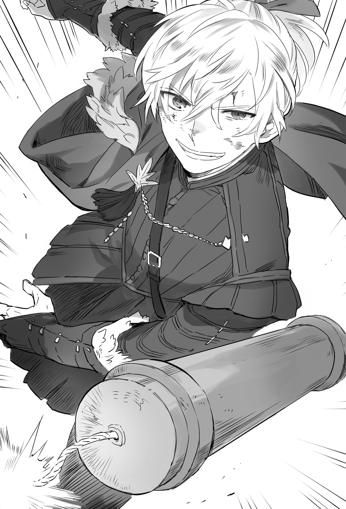

Chapter 1 – The Power of Holy Relic
.
Part 1
Baldr and others entered the harbor of the great commercial city of Trystovy, Mulberry amidst acclamations that reverberated like heavy thunder.
The kingdom’s flag that was last hoisted more than ten years ago made the citizens recalled the past glorious era and then were choked with tears while hugging each other.
More than ten years ago, Trystovy rivaled the continent’s superpower Answerer Kingdom in population, economic strength, and navy power. It was even predicted that Trystovy was going to surpass Answerer.
That was exactly why the nobles feared the increase of the commoner’s strength.
At that time Answerer Kingdom also regarded Trystovy Kingdom’s growth as danger and maneuvered behind the scene.
Perhaps the break up of Trystovy was unavoidable sooner or later.
However perhaps that glorious days could be regained once more.
Baldr’s entrance made them harbored such hope.
For Mulberry citizens who were completely exhausted due to the sea blockade by the dukedom’s navy, the matter of Baldr inheriting beastman blood was just a trivial problem.
「Trystovy Kingdom banzai!」
「Margrave Antrim banzai!」
「Maritime guild banzai!」
Mulberry was enveloped in an atmosphere of joy that was never seen before.
.
When the flagship that was boarded by one of the Seven Elders and the leader of pro dukedom faction Gastone was sunk, the rest of private fleets quickly raised white flag and surrendered.
There were also some people who didn’t take action together with Gastone and so they escaped danger, but at this point they didn’t even think of opposing Baldr.
They would definitely be ganged up immediately if they did something like that.
「──Even so this thing really is huge.」
The leader of the Seven Elders Piaggio looked up at the giant ship Gigante that had a total length of 300 meters and total width of 70 meters with an astonished laugh.
He had heard the report, but he didn’t think that the ship could be this big.
He couldn’t even imagine how Balrd could possibly capture this monster ship.
Regardless of what kind of method was used (it was simply because they had monsters that surpassed Gigante), the fact that Gigante had fallen into their hand was significant.
At the south there was still the first Gigante that was commandeered by the dukedom’s navy first fleet’s commander Federigo, but if this Gigante was sent to clash with that Gigante, it wouldn’t be difficult to open the sea blockade.
The maritime guild wasn’t inferior at all against the dukedom’s navy if it was just a simple comparison of sea power. If the sea blockade was taken down, Mulberry would soon regain its vitality.
Because the Gigante was too big, Baldr and others went to the land using a cutter boat.
「Have we made you wait long, chairman?」
As expected Piaggio frowned at Augusto’s arrogant words.
「It was like my neck would grow longer with how long I’ve been waiting. Your place to return home would be gone if you came any later.」
「Forgive me then for making you worry like that.」
Augusto laughed brazenly.
Piaggio was certainly a leader and a senior in maritime guild, but he was still a person of common sense that Augusto could comprehend rather than heroines like Maggot, Gina, or Urraca whose absurdity he had just witnessed from the front seat.
「Can’t you dispense with the small talk and give me an introduction already? He is the person who will be our lord.」
Piaggio said that and kneeled.
Augusto coughed solemnly and he too followed along and kneeled reverently.
Ignoring of what his mind actually thought, Augusto too understood that this kind of formality was necessary.
「This personage was tormented with heartache after learning of the danger that threatened Mulberry’s survival and headed out to the rescue regardless of the danger. Here is the heir to the throne of Trystovy Kingdom, Margrave Antrim, Baldr-sama.」
Baldr got down from the cutter boat and waved his hand smilingly at the onlookers while speaking to Piaggio cheerfully.
「You have done well to endure the dukedom’s tyranny for so long. Rest assured that Mulberry is now out of danger.」
「Yes my lord!」
Of course there were also people who were watching this with displeasure.
Mulberry was a city that had protected its independence for a long time. They weren’t amused that they had to bend the knee at this late hour toward Baldr who appeared out of nowhere.
「At the dawn of the kingdom’s revival, I shall welcome the Seven Elders with a treatment that is equal to a duke. I will never treat everyone here crudely in compensation of your loyalty.」
「We are unworthy for this honor.」
Although this point of compromise had been reached beforehand with Augusto’s intermediation, this conversation made the citizens’ enthusiasm to reach the peak.
It wasn’t a complete self-government, but a territory that was governed by a duke was almost the same as having its self-government recognized.
The last king Umberto I who was executed was betrayed by the nobles because he defended the commoners too much.
The people recalled the memory of that time where the commoners’ right was protected and the economy’s growth soared high. With Baldr’s words they were convinced that Mulberry would be revived.
「UOOOOOOOOOOH!」
There were also some people among them who thought of Baldr’s existence as questionable. There were also people who worried that Baldr would be the same like other nobles who only wanted to bleed them dry.
But, nothing would beat having a ruler who could walk the path of prosperity together with them just like Umberto in the past.
「Trystovy Kingdom banzai!」
「His majesty Baldr banzai!」
「Glory to Margrave Antrim!」
The wave of acclamations that showed no sign of stopping drove Mulberry into a crucible of excitement.
With this enthusiasm it felt like there was already no one here who harbored doubt of Baldr ruling over Trystovy.
.
「This method is a bit sly but, it looks like it’s effective.」
「……To be honest I didn’t expect to be this welcomed.」
Baldr and Piaggio moved to the reception room of the elders. There they smiled wryly at each other.
More than half of the two’s conversation was just acting, but it was a fact that Baldr was presiding over it as Trystovy King.
And then Baldr proved in the best form there was that he was worthy for that position.
The maritime guild and Baldr had won the bet that they made to each other.
「Allow me to introduce myself once more. This one is called Piaggio Delvecchio. I have the honor of serving the maritime guild as the chairman of the elder senate.」
「My name is Barbarino Zanariderri, the commander of maritime guild’s armada. Pleased to make your acquaintance.」
「I am the legal officer of maritime guild, Pietro Milano. Although insignificant, I shall stake this life to prove my loyalty to your highness.」
「Your highness?」
「If we conform to the royal family law of Trystovy Kingdom, Margrave Antrim is the first heir to the throne although your highness have never been officially as the crown prince. I think that for now I should call your highness Prince Baldr.」
Pietro held his head high as befitting a legal officer.Baldr only smiled vaguely at that.
He himself also thought that it was too hasty to claim himself as king. He also thought that Pietro’s opinion was only natural.
Either way it didn’t change that it felt embarrassing for him to be called like that.
I am the finance official of maritime guild, Mario Andreotti(マリオ・アンデレオッティ). I’ll be grateful if your highness can give me a little bit of your time later to discuss about the war expenditures from here on.]
「──Go easy on me later.」
「Right now one of the Seven Elders, Lambert Colombo(ランベルド・コロンボー) is leading a fleet to the open sea. While our last member is as your highness aware──」
「The son of Bennett Garibaldi, Augusto Garibaldi. I shall pour my effort for your highness Baldr’s sake in the place of my father──ouch!」
Augusto spread his hands wide open theatrically in exaggeration, but then Gina’s fist landed on the back of his head.
「What are you doing!」
「Sorry. I was just reminded of an unpleasant guy for a bit. Tell your father if you have any complaint.」
Bennett at his youth──in other words Valerie was also a person who got carried away easily just like the current Augusto.
When he was still filled with energy to bring brighter future to Trystovy and talked with Viktor about their dream, he was truly a youth just like Augusto.
Such fact was painful to Gina.
(Thinking carefully his bad habit with woman is also exactly like his father!)
「……How horrible, it left a bump on my head! Well, because of that best regards.」
Piaggio sent an exasperated gaze at Augusto who didn’t reflect at all before he brought the introduction to the finish.
「All of us elders swear that we shall spare no effort in order for your highness Baldr to ascend t the throne. I beg your highness to not forget the faithful service of this maritime guild.」
「I shall engrave this vow into my soul.」
Piaggio confirmed that a certain level of trust and mutual understanding had been formed between both sides and smiled brightly. He then clapped his hands.
「Then, we will hold a welcoming banquet with all the luxury that Mulberry can offer as the cornerstone of this continent’s trade! We’re going to assemble delicacies that even your highness has never seen before.」
「──I’m thankful for your generosity but I ask you to continue this talk for now. I’ll look forward to enjoy the wine for the later.」
「Very well, but what is it that we’re going to talk about?」
Piaggio was a capable man, but he was essentially a civil official.
Only Barbarino who was also an admiral who could barely guess what Baldr was going to say.
「──Of course, we’ll hold a war council.」
.
Part 2
「Just what is our navy doing-!?」
The dukedom’s great general Cesare was puzzled by the loud cheers that suddenly broke out from Mulberry. He ordered his men to investigate and the report he obtained was nearly the worst.
Gigante that was the navy’s trump card was seized by the guild, in addition his influential insider man Gastone was executed. Furthermore the one who accomplished all those was that beastman Margrave Antrim who was aiming for Trystovy’s throne.
In other words not only Mulberry had smoked out the traitors and hardened their unity, they had even received reinforcement.
It could be said that a great part of the tactic that Cesare drawn had collapsed.
「How can such absurd story happen! Everything was going smoothly until just now!」
If only Gigante could block reinforcement from arriving, Gastone would rally the merchants of Mulberry and grasped the initiative within the Seven Elders.
If that happened it wouldn’t take long until Mulberry opened its gate without any bloodshed.
With such achievement that would completely shut up that annoying old general Olten, he planned to remove Olten’s influence from within dukedom military. And yet this happened.
Of course, there was no plan that would go smoothly without any hindrance.
That was why an excellent tactician would prepare more than four countermeasures in case one of his plans went awry.
But Cesare entrusted everything to just a single plan.
Therefore he was unable to think of even a single plan to recover. He could only vent out his resentment and disappointment.
Now that things had reached this point, the only thing he could do was to launch an all-out attack to Mulberry.
Cesare couldn’t even imagine who far Mulberry’s morale and defensive strength would increase after obtaining Baldr’s reinforcement.
「The reinforcement is only 400 troops………only 400 troops. Those fools are simply getting carried away a little right now.」
If he attacked with a large army without care of loss, even the impregnable Mulberry would definitely fall.
Cesare didn’t notice that it was just a hopeful wish and believed it stubbornly.
No, he had no other path other than believing that.
.
「This is the worst development even among all the possibilities I thought up.」
「It’s pointless to say this at this late, but we should at least attack before this when we could still work together with the traitors inside.」
Olten was talking with a man at the rear that was far removed from the troop headquarters.
「What is that moron doing right now?」
「Our general is currently in the middle of escaping from reality with all his might. It won’t be strange even if his brain get filled with flower field like optimistic fool soon.」
「He will even try something stupid like attacking head-on without any scheme at all?」
「I will revise my opinion on him a little if he can think up any other option than that.」
The name of this man at his thirty with prematurely gray hair was Sylva Berlusconi(シルヴァ・ベルルスコーニ). He was a man who served as Cesare’s staff officer.
Although Cesare had never listened to his opinion even once until now.
「Won’t he try to use your excellency as bait?」
Cesare’s specialty was to present a sacrifice whose job was to gather the damage onto themselves while he would come later to profit from that.
But he was also a cowardly man at the same time.
「He will never put me in a position where I might raise achievement.」
Even now there would be some ways to fight if Olten was in command of the troops, but it was unthinkable that Cesare would allow that.
「It will be the end for the dukedom if this expedition army is annihilated. Whether we lose or receiving aid from Answerer Kingdom, that will be the end.」
A country that lost its strength to guard itself would be unable to maintain its independence.
The dukedom would be preyed on and disappeared from this land, whether it was by Baldr’s Trystovy Kingdom or by Answerer Kingdom.
He had to bring back more than half of this expedition army no matter what method he had to use.
In order to do that, Olten wouldn’t hesitate to act no matter what kind of stigma he had to shoulder later.
「I can only have him disappear. If he just die, then there is no doubt I will have the highest rank according to the military hierarchy.」
The problem was how to hide that fact from being found out by others.
.
Part 3
「Isn’t this too hasty?」
Baldr suddenly declared that he would go into offense. It couldn’t be helped that was the first thing Piaggio said when he opened his mouth.
Baldr’s arrival and Gigante’s capture had certainly made Mulberry gained momentum.
However the difference in strength with dukedom army was still overwhelmingly disadvantageous for Mulberry.
If by any chance Baldr set out and was defeated, the morale that had finally risen would immediately disperse to the wind. If that happened then internal struggle would occur within the maritime guild once more.
First they had to harden their defense firmly. And then they would recapture the blockaded sea lane and obtained new supplies and reinforcement before going out in counterattack.
Piaggio’s thinking was reasonable tactically.
Admiral Barbarino also had the same thinking like Piaggio.
「Our guild’s armada wish to borrow the strength of the captured Gigante and crush Federigo’s fleet immediately.」
「Of course, I will hand over Gigante to the guild. You can use it as you please. I’ll leave it to the maritime guild to arrange the manpower to operate it.」
「──Is that alright?」
「It will only be a waste to leave it in my possession.」
The 400 soldiers that Baldr brought with him were all land troops.
It Urraca’s navy that were steering Gigante until here, but they had their own ship and they couldn’t be in charge of Gigante forever.
Either way if the maritime guild was accepting their place as Baldr’s retainers, then the realistic decision was to leave Gigante to them.
「If our Gigante can hold back the enemy’s Gigante, the rest will be decided purely by the ship crews’ skill. The enemy is inferior with me at this side!」
Urraca powerfully stated that.
「I’m grateful. There will be nothing more reassuring than this if Tormenta Negra is going to cooperate with us.」
Barbarino highly evaluated the navy of Majorca Kingdom precisely because they were once rival. He also believed in the skill of Urraca who destroyed the superiority of the dukedom’s fleet.
Thanks to Urraca beating the dukedom’s fleet, the maritime guild was able to obtain the control of the South Seas without much effort.
In that sense, Urraca was also a benefactor of the guild.
「This Mulberry won’t fall as long as the sea lane is in good condition. That fact will be even more certain if there is more reinforcement that will come from Antrim.」
They shouldn’t make any reckless gamble here.
Baldr nodded at Piaggio’s words while laughing a little.
「You’re speaking correctly if we’re only considering Mulberry’s defense. But, I didn’t come here just to defend Mulberry.」
「That’s……」
It was here that the elders finally noticed that they were only thinking of the war situation based on their convenience.
It was an unsightly blunder for Baldr’s retainers. But, even knowing that the risk of Baldr going out into offense right now was too dangerous.
「It’s just as your highness say, the kingdom’s revival won’t come true if we only defend. But time is at our side here!」
If it became a protracted battle, the large army would become a burden for the dukedom instead.
The logistics would be a heavy burden to maintain a large army. The bigger an army was, the faster morale would decrease from lack of supply.
Piaggio was saying that it wouldn’t be too late to attack after waiting for that to happen.
「Piaggio’s opinion is correct. But I have three reasons why I have to fight immediately.」
Baldr said that while raising three fingers.
「First reason, the dukedom isn’t expecting that we will be attacking from our side. No matter the era an army that cannot prepare itself mentally will be brittle.」
Even so, it was impossible to overturn the difference in strength that was nearly five times with just that.
Piaggio and others couldn’t hide their unconvinced look even while nodding at Baldr.
「And then the second reason, unfortunately the support I have to inherit Trystovy’s throne is small. It’s partly caused by the beastman blood flowing inside me but……」
The maritime guild submitted to Baldr because of their special circumstance within Trystovy.
They traded with a lot of countries and on top of that they had the disposition to not hold much stock toward race prejudice. In addition they also highly evaluated the numerous groundbreaking inventions that Baldr invented.
Besides when they investigated Baldr’s relationship with Savaran Company and Dowding Company, they learned that Baldr was the ideal lord for merchant.
A lord who wouldn’t betray trust and tried to one-sidedly exploit his subjects, a lord who could build win-win relationship was very rare.
Also there were a lot of people who missed the old kingdom over the dukedom because of how Umberto I protected Mulberry in the past.
Of course there was also the realistic situation where it was now very hard for the maritime guild to protect Mulberry with just its strength from the dukedom that was supported by Answerer Kingdom.
Baldr’s existence was still obscure among Trystovy people outside Mulberry. Even those who knew about Baldr’s existence didn’t think nicely about him.
「We also have the choice of gathering a large army, preparing supplies, and wait for the enemy to blunder. However there is no guarantee that the passing of time will only help us. We don’t know what kind of approach Answerer Kingdom will take after all.」
If Answerer Kingdom seriously supported the dukedom just like how the maritime guild was supporting Baldr, the difference in strength would widen even more.
It was clear that it would be their side that got pushed into disadvantage.
「That’s why it’s necessary for me personally to win with a small force in a clear shape that no one can deny. It needs to be something so clear that even Answerer Kingdom will hesitate to interfere. And also so that the people can have hope for this civil war to end. And to make the nobles who are dissatisfied toward the dukedom to waver.」
Setting aside the battle at sea, the maritime guild was always being on the defensive when it came to land battle.
That was why the people in general didn’t even consider something like the maritime guild uniting the country. They thought that the best the maritime guild could do was only to maintain their autonomy at Mulberry.
That thinking wasn’t actually wrong.
It was the truth that maintaining the status quo was the priority of the elders including Piaggio.
In such situation, even if they obtained reinforcement and prepared a battle strength that equaled the enemy, it would be impossible for the populace to have hope for the end of the civil war.
Looking objectively, Baldr who only had 400 troops was clearly just a figurehead that the maritime guild elevated.
The general opinion of the society was that this just a method of the maritime guild to obtain justification and support from other countries.
That wasn’t the case, it was the maritime guild that was under Baldr’s control.
To make that fact became known, the most effective way was for Baldr to directly lead the army and won.
「And then the last reason, it’s a really simple reason.」
Baldr looked around at Piaggio and others and grinned boldly.
「──We will win easily if we fight. There is no army in this world that can defend against King’s Gate owner when they never fought one before.」
.
As expected they had to spend some time to explain about the King’s Gate.
It was an ability that was last owned by the beast king. The story about this ability was only passed down in the beast god shrine as a legend.
Actually Europa religion also knew about this ability, but the maritime guild’s elders didn’t know at all about it, which was only natural.
「I still can’t agree to it! Please don’t act rashly.」
Even so Admiral Barbarino openly spoke words of objection.
He was the one with the most military disposition among the elders. He considered the risk was extremely great for Baldr to go into attack with just a few number.
The fate of the maritime guild would also end if something happen to Baldr by any chance.
He was completely unable to turn a blind eye to such rash gamble.
「So you won’t be convinced with just verbal explanation like this. Then can you assemble some people with skill?」
Baldr spoke with a wry smile. Barbarino replied to him dubiously.
「I don’t think that the dukedom will attack right away, so it’s possible if I’m allowed the time. But what does your highness plan to do with that?」
「I’m thinking to have you ascertain it with your own eyes if you can’t be convinced with just words.」
.
A runner from the maritime guild immediately went to Mulberry’s land battle commander Gustiniani with a message after that.
「──A bout? Our morale has finally risen up like this. I don’t want it to crash down again.」
Gustiniani said that with his face grimacing in displeasure.
He had confidence on his own experience and ability. He really didn’t want to be ordered to do some phony match to make the opponent looked good.
「They said that there is no need to hold back. If possible they want you to beat up the opponent.」
「Aaa? Obviously I can beat them.」
He didn’t know how skilled this Margrave Antrim was, but Gustiniani was someone with the achievement of protecting this Mulberry until now.
It was the common knowledge that three times the number of the defender was needed to take down a castle, but as long as he was here, he could protect this city completely even if the enemy’s number was ten times his force.
He was also receiving salary that wasn’t cheap by any means, and that was because he possessed the strength that was worth that much money. He had such confidence.
「Oi adjutant , I’ll leave the command to you for a while. It looks like they need me to babysit a spoiled boy over there.」
Trying to revive the kingdom was nice and all, but it would be a great mistake if that brat thought that war would goes just like what he imagined in his childish mind.
The number of mercenary who lost their life because of the adventurous tactic of a young ruler couldn’t be measured.
Gustiniani silently resolved that he wasn’t going to let this Mulberry that he had protected all this time with his sweat and tear to be messed around by Baldr.
.
「I brought 200 energetic guys with me. And, how are we going to do this?」
Like this Gustiniani met Baldr for the first time.
He looked like a lady-killer with good upbringing, but he also seemed like a nice youth without any conceit.
Gustiniani couldn’t feel any arrogance of a noble who tended to start attacking recklessly from Baldr. It was surprising to him.
But even that impression only lasted until the next words that Baldr said.
「I’ll take all of you alone, so do you want to bed how long you all will last?」
*Snap*, vein pulsed on Gustiniani’s forehead.
He wanted to praise himself from not punching Baldr right away. If it was him from ten years ago then there was no doubt his fist would already fly.
「By that do you mean it’s a bet of how long you’re going to stay standing boy?」
His speech turned a little rough but he paid it no mind.
「No, it’s a bet of how long it will take until all of you become unable to stay on your feet.」
「You have guts. You don’t need us holding anything back right?」
There would be no need for mercy if he looked down on their strength like that. He would beat him up until he was crawling on the ground crying. If he got fired because of that then he would walk out of here himself.
Piaggio and Barbarino got nervous seeing that Gustiniani had made his decision.
Regardless of everything, the two of them knew that it would be difficult to protect Mulberry until now without Gustiniani’s skill.
「Boys, you listening? It’s gonna be the start of a fun class. I don’t know how they are doing shit at the sophisticated army, but it’ll be over for us if we get underestimated, you all get that?」
「Yeah of course.」
「──You’re pretty vigorous over there, Big Shield Gusti.」
That voice seemed familiar.
He reeled the string of his memory to remember whose voice was it. He needed nearly three seconds until he recalled.
At the same time a shudder ran through Gustiniani’s back as though there was an icicle pushed into there.
「Silver Light……Maggot?」
「It’s nice to see that both of us are still alive even now. Especially because you were always at the opposite side before this.」
Cold greasy sweat immediately drenched Gustiniani’s whole body.
When Gustiniani was still just a simple mercenary, Maggot was famous as a disaster that couldn’t be touched.
Maggot always appeared at the battlefield area with fierce fighting. He didn’t know how many of his acquaintances had been killed by her hand.
Don’t think of that woman as human. Think of her as a battalion of heavy armor knights.
When he learned that Maggot was participating in the battle, Gustiniani would repeatedly warn all his colleagues like that.
To think that he would be reunited with her in this kind of place.
Could it be that the reason of Baldr’s confidence was because of her existence?
Certainly if Maggot assisted him, the 300 soldiers in this place wouldn’t be of any use.
Let’s run if she is also fighting, Gustiniani made that decision without any care of his reputation or appearance.
「Long time no see. Are you this young master’s bodyguard?」
「Unfortunately he is my son. So be as rough as you can with him.」
「Y-you are joking right?」
Baldr Antrim Cornelius was the heir to the throne who inherited the blood of Trystovy’s royal family.
That meant, Silver Light Maggot was also a princess. No, rather than that Baldr was her son. For someone like her to send him out with a smile…….
「C-could it be you……train him?」
「Of course I trained him a lot. Aren’t you glad? If you can defeat Baldr, you can proudly claim to be a man who defeated the Silver Light Maggot you know?」
「Stronger than Silver Light Maggot? You’re joking right? Tell me that it’s a joke!」
Gustiniani turned toward Piaggio with a pale face. His expression was ghastly.
However Piaggio heartlessly shook his head.
For his whole life Gustiniani never regretted his own choice as much as now.
「Sorry but let’s just treat it that this talk never happen……」
「Do it thoroughly! You get it right?」
「I’ll put forth every effort! Okaa-sama!」
「NOOOOOOOOOOOOOOOOOOOOOOOOOOOO!」
Thirty minutes later Baldr’s attack was acknowledged unanimously.
.
Part 4
「As I thought there isn’t any sign of Olten.」
Ramillies who boarded the transport ship along with the 400 elites of Antrim landed on Mulberry slightly later than Baldr. And then he looked down at the dukedom army from above the rampart.
The number was amazing, but the organization of the troops was rough.
Even so that rough organization didn’t become a fatal mistake because of the experience that the troops had accumulated from the long war.
The number of mercenary was fewer than expected, but perhaps the dukedom too didn’t have much budget for military affair.
「I don’t think he is a guy who will quietly retire though……」
The Olten that Ramillies knew was a man who was the very picture of resolute determination.
He wasn’t a man who would let his hands got tied and only waited until the enemy broke down from inside. For him to not be here, that meant he wasn’t in a position that could interfere with the command of the dukedom army.
The current commander-in-chief of the dukedom army should be the man called Cesare.
Ramillies closed his eyes and followed the memory of his youth, but he had no memory of the man called Cesare among his subordinates.
Although there wasn’t any need to fear him if he was someone who didn’t have any further plan just because Gastone’s betrayal failed.
「Where are you Olten? You definitely must be somewhere in this battlefield. You won’t be my friend Olten if not.」
Ramillies doubted his ears when he heard that Olten rebelled against the royal family.
It was Olten’s pride of a lifetime to be the sword of his lord.
For someone like him to change lord, Ramillies couldn’t imagine just how much anger and despair that was needed for Olten to make such decision.
But, there was just one thing that Ramillies understood from observing Olten’s action after that.
Olten wouldn’t betray the dukedom. He wouldn’t change lord anymore.
Olten built the dukedom by throwing his pride as a knight and piled up a mountain of corpses of his former comrades. The dukedom was his master and also an existence that surpassed even his own biological son.
Most of all, as someone who killed his lord and betrayed his comrades, Olten had the duty to raise the dukedom to be an ideal homeland. If it was Olten then he was surely thinking like that.
Exactly because of that, there was no way that Olten would relax in his retirement just because he had grown old.
「Now then, it’s the long-cherished desire of a knight to settle things with a long time rival, but it will be a little bone-breaking to have you as enemy, Olten.」
His old friend who was a reliable ally in the past was now a powerful enemy that couldn’t be underestimated.
As expected it was difficult to fight his fellow knight who he ran around in the battlefield together with while entrusting their back to each other.
It was especially problematic that both of them knew each other personality and habit very well.
Most likely the majority of his thinking was being discerned by Olten.
「……But, I have something that you don’t have. Perhaps you too have something that I don’t have, but it won’t be enough to fill the gap that exist between the lords we serve.」
Ramillies’s heart returned to that time when he was just a knight serving Viktor.
He had an absolute lord who he could offer his life for without any hesitation.
In contrast Olten undoubtedly lost himself after changing his lord and shouldered a lot of things on his back.
As a knight and as an old friend, he couldn’t help but feeling pity to Olten’s current situation. Although he didn’t have any intention to be merciful because of that.
「At least I’ll send you off to that world with my own hand.」
.
Part 5
「──Ramillies is going to attack. That moron Cesare can’t comprehend that.」
While Ramillies was looking down at the dukedom army from the rampart, Olten was also looking up at the rampart from his tent.
「A night raid?」
The staff officer Sylva asked while observing Olten’s expression.
「That’s possible, but if it’s me then I’ll aim at noon.」
「No way……」
The side with overwhelmingly inferior number often used surprise attack.
Attacking at the enemy’s weak spot to temporarily secure dominance in the field and dealt damage to the enemy. It was considered as an effective tactic since time immemorial.
「A surprise attack will damage your own force more rather than the enemy if you don’t do it very well. Especially at a good battlefield with good visibility like this.」
It would be different in urban battle or mountain battle, but there was almost nothing but open field outside of Mulberry’s rampart.
The road was well maintained because this place was a base for goods distribution, also the farming here was developed in order to maintain a land that needed great expenditure like Mulberry.
In this battlefield it was impossible to secretly circle around the enemy and attacked from behind, that was why Sylva reached the conjecture that the opponent would attack at night.
「Unexpectedly attacking at noon can give greater impact because of human’s psychological blind spot. Most of all it was possible to win even at noon if the opponent is the dukedom army at its current state. I will think like that if I’m the enemy general.」
As expected Sylva’s expression clouded hearing Olten’s words.
As an active staff officer, putting aside Cesare’s incompetence, he held a degree of confidence to the proficiency of the dukedom army.
「Most importantly the staff officers are predicting that the enemy won’t go out and attack at noon. Especially Cesare, if the enemy attack while he was in the middle of preparing for an all-out attack……what will happen?」
「He will run. There is no doubt that he will do that if he feels that his life is in danger.」
Staff officer had to constantly expect the worst situation. This should be the basic mental attitude for them, and yet he realized that he had been imprisoned within the framework of common sense before he realized it. Sylva blushed in shame.
「The frontline will collapse just from the commander-in-chief running away. For good or bad, army is something like that. The enemy’s surprise attack will likely target Cesare.」
「Then, should I tell those at our side to solidify the frontline?」
In the end number would decide everything as long as the chain of command was safe. If things go well it also wouldn’t be impossible for them to capture or annihilate the enemy’s surprise attack troops.
If they knew that a surprise attack was coming, it wouldn’t be that difficult to deal with it.
Olten stared at Sylva with eyes that were like the dark bottom of sea.
「No need. If it’s possible tell them to withdraw to the rear of the frontline. Make them switch with Cesare’s favorites.」
「W-why is that……?」
Sylva’s back shivered. It was like he was being seen through until the very depth of his mind.
「──Call Cesare to the frontline. Tell him that it’s for increasing the soldier’s morale before the all-out attack. There is no way Ramillies will overlook that chance if it’s him.」
「You’re telling me to hand over victory to the enemy!」
Sylva was enraged. He couldn’t believe what he had just heard. But Olten was still looking at him with a cold gaze even now.
「That’s the only way to remove Cesare and regain the command of the army. We don’t have any pawn to assassinate him after all. The risk is high but, there will be little problem if he died in the battlefield.」
「I don’t mind if we’re going ot kill Cesare. However I can’t turn a blind eye to something that will enlarge the damage to our ally like this!」
「This country will be destroyed if that man continue to hold the command! We have to avoid the annihilation of the army here using any means!」
Olten didn’t raise his voice at all.
However Olten’s calm words overpowered Sylva completely. The difference of experience in struggling through scenes of carnage didn’t allow him to object more than this.
「You still don’t know the strength of the enemy. Listen to my order for now. If my words are a lie, I’ll give you my head anytime.」
「Is it that much……is the man called Ramillies really that terrifying?」
From what Sylva knew, the person called Olten was capable and also a fierce general. He wasn’t the type to fear the enemy too much.
That Olten was this wary toward an opponent. Just what kind of man could it be?
「Our skill in sword is about equal, but I never won against Ramillies in training where we were leading a company of troops. If he stayed in the dukedom, he would surely become a great general ahead of me.」
But, Ramillies who abandoned being a knight after he lost his lord now returned to be a knight once more in the service of Margrave Antrim. He would be even more terrifying than in the past.
Olten just barely swallowed back those words.
It would be stupid if he scare Sylva when he still didn’t have any basis to his words right now. And Olten himself didn’t want to accept that fact.
Olten had devoted his life for Trystovy Dukedom, but in the end was Jack a lord that was worthy for his sword?
Ramillies and Margrave Antrim reminded him of his doubt that he mustn’t have as a retainer.
「This body is already not the Olten of that time. I’ll teach you Ramillies, just how much someone who has been reduced into a demon in the service of protecting his country can do.」
There was decisively different point between Ramillies and Olten.
Olten who had continued to be involved with the survival of the dukedom as a great general had immersed his body into the filt that was political strife and schemes. Exactly because of that, even if he had to kill his ally and trick his friend, he would at least protect the dukedom’s future.
The knight of integrity Olten had died in the day of that coup d’etat.
「Lend me your help Sylva. No matter what kind of method I have to employ, the dukedom has to survive at all cost.」
「──If that is what your excellency ask for…」
And then there was another man who sold his soul and became a demon to protect his country.
.
Part 6
Cesare couldn’t hide the expression of anxiety on his face.
He boasted in front of Archduke Jack and went into a campaign with a large army that was entrusted to him, and yet if he was unable to obtain any result, far from putting the military under his grasp, he would lose his position and status that he had built up until now instead.
Furthermore it would clearly be problematic if he gave Margrave Antrim who wanted to revive the kingdom the achievement of repelling the dukedom army.
He had to win. No matter how many soldiers he had to sacrifice.
Fortunately he had learned that the reinforcement that accompanied Margrave Antrim was only a small force of 400 troops.
He also tried to grasp a sliver of hope by searching for the spies that acted together with Gastone, but the result was pitiful.
More than half of the traitors lost their life in the sea battle. And when Gastone’s death became clear, all the remaining spies switched side to the maritime guild’s side.
They didn’t actually swear loyalty to the dukedom from the start.
They only wagged their tail to the dukedom because they didn’t want to be on a sinking ship, so it was only natural for them to turn around if it looked like maritime guild could win.
「──Shit! Those ungrateful bastards!」
Cesare was infuriated because he had spent not a few amount of fund for all the maneuvering.
The strategy that Cesare pictured had completely broken down.
What was left was only to launch all-out attack without any care of appearance. He understood that but, Cesare didn’t have the solid confidence that he could win an all-out war without any trick.
Until now he had always used some kind of swindling method. He would sacrifice someone and stood on their corpse to win. For Cesare, fighting without any kind of trick was enough to put him under heavy mental pressure.
He also considered the idea of leaving the command of the frontline to Olten, but Olten might raise a great achievement if he let him acted freely right now.
Regardless of anything his force was five times bigger than the enemy. The possibility of winning wasn’t low by any means.
Then should he give Olten a few troops and used him as disposable pawn?
Olten’s existence was too big to be blatantly used as a sacrificial pawn, in addition the subordinates who admired Olten might interfere unnecessarily.
In the end Cesare didn’t have any other way except to accomplish this with his own capability.
「Your excellency, I ask for permission to offer my opinion.」
「You are permitted.」
Normally Cesare might ignore such request. For Cesare who wanted to monopolize all the accomplishments for himself, staff officers were just decoration to him. However right now he wanted something to cling to no matter how small.
「The enemy’s morale is rising because of Margrave Antrim’s appearance. Perhaps we too should take some kind of countermeasure.」
「Speak of your idea concretely.」
「First in preparation for the all-out attack, we should place the units with relatively high morale at the frontline. Furthermore it might good for morale if the headquarters is moved forward and your excellency personally speak at the front to encourage the soldiers to fight harder.」
Cesare thought that the idea wasn’t bad.
High morale──him personally visiting the protégés under his command and giving them a speech. That would be quite an impressive scene. He also wouldn’t be endangered if he returned to the headquarters before the start of the attack.
Cesare never even considered it in his dream that the enemy would intentionally leave the castle when their number was completely inferior.
「Very well, make the preparation for that.」
Cesare answered in a good mood.
From a glance Sylva’s suggestion would heighten their chance of victory as well as tickling the pompous pride of Cesare.
.
Baldr immediately detected the sudden movement of the dukedom army.
「First let’s see what you got.」
One way to do this was using the disorder of the enemy troops during their reshuffling, but even if some damage was dealt to the enemy, it would be meaningless with this much difference of number.
「It will be really helpful if the enemy general is an idiot who nonchalantly show himself at the frontline though.」
「Based on the prisoner’s information, he seems to be a coward with little assertiveness.」
Baldr asked Ramillies who was putting on a grim expression.
「If it’s the previous great general Olten then how will he move?」
「If it’s the Olten who I know, he will stand in front of the troops and attack recklessly. However, if that’s not the case, then it means the opponent is an Olten who I don’t know. To be honest, I’m scared of that while also looking forward to it at the same time.」
Ramillies smiled bashfully.
.
「Loyal and brave soldiers of Trystovy Dukedom!」
Cesare raised his voice in front of the soldiers in a good mood.
It wasn’t like the anxiety he felt was gone, but it couldn’t be helped for him to be in high spirit when surrounded by so many of his troops that looked like a sea of human like this.
「A never seen before glory is waiting in front of all of you gentlemen. The fall of Mulberry that our dukedom has wished for so many years is now within the reach!」
Troublingly Cesare didn’t simply say that just for heightening the morale but because he believed that from his heart.
Mulberry would definitely fall if he didn’t care of the loss to his own troops.
It was unfortunate that Gastone was killed, but the information that he managed to obtain from him was still there.
Especially the information about the number of Mulberry’s troops, their positioning, and even the character of the commander. Those were all useful information to know.
No matter how genius the commander Gustiniani was a genius in defense, he too was just a single human. He couldn’t continue fighting without sleep or rest.
「I swear that we shall obtain victory! Mulberry is nothing to be afraid of!」
The one who bragged that while hitting his chest powerfully was Cesare’s protégé, a regimental commander named Wilco.
This man was aiming to be Cesare’s successor. He was planning to obtain even more of Cesare’s favor at this chance.
Unlike peerage, the position of great general wasn’t something that could be handed over to a descendant.
Of course it would be the king who appointed the great general, but the king wouldn’t ignore the advice of the previous great general, so it was an extremely big issue whether Cesare liked him or not.
「An admirable spirit.」
Cesare too showed his satisfaction at Wilco’s reaction. Regardless of what ulterior motive there was behind it, a subordinate who understood his superior’s wish was adorable.
Although Cesare only took a liking to Wilco as nothing but a tool for the sake of his own ambition.
「The filthy pretender beastman only brought mere 400 soldiers together with him. Our superiority hasn’t wavered at all. Muster up your courage my soldiers, there are surely cordial rewards waiting for all of you!」
Many of the soldiers were relieved that Baldr only brought 400 soldiers.
But the veteran soldiers were throwing exasperated gaze at Cesare.
The greatest reason why Mulberry was impregnable until now was because the sea lanes were in the maritime guild’s hand.
The cornerstone of Mulberry’s defense was mercenaries. The city’s morale would swiftly lower if the supply of mercenary was cut off.
Not only their morale would lower, there might even be infighting breaking out.
In order to maintain their morale, food, reward, and then stable supply of reinforcement were indispensable.
Gustiniani was able to display his excellent ability in tactical commanding was only because there was such foundation.
Baldr’s appearance meant that Gigante had been passed through. In other words it only served as the proof of Mulberry’s impregnability.
「──Good grief, it’s not bad that we got a lot of allies, but spare me from becoming the sacrifice at the forefront.」
Most of the ordinary soldiers like them prioritized surviving and returning to their home alive rather than raising achievements to obtain reward. They had no intention to throw away their life for the sake of Cesare’s vanity no matter what.
However their commander, the regimental commanders and company commanders got their desire for promotion to be greatly stimulated.
「Victory to the dukedom!」
「Glory to the dukedom!」
「Destroy Mulberry!」
As Cesare expected, the raising of the morale was a success.
It wasn’t just the commanders, there was also some commoners who wished to grasp success and became knight.
Cesare nodded in satisfaction and headed to the next regiment.
.
「──We are really underestimated here.」
Baldr listened to the war cry from the dukedom army with a troubled smile from above the rampart.
The enemy was being too open. They had no intention of even trying to hide their next action.
It was like they were declaring that they were going to attack after this after raising the troops’ fervor.
Furthermore the commander-in-chief expressly came out to the front line. He must be really convinced that they weren’t going to come out attacking.
Of course Baldr wasn’t so kind that he would respect the enemy’s wish.
It was manner to eat up the feast that was served before one’s eye without reservation.
「Now then, let’s go.」
.
The drawbridge that was connecting Mulberry’s huge gate started to be lowered.
This drawbridge that was the cornerstone of the defense had a total length of 30 meters. It needed dozens of people to operate it using steel chains and a rolling device.
The rumbling sound that was produced during its operation was naturally heard by the dukedom army immediately.
「Hmph, they want to negotiate after this late?」
Cesare laughed. Those people must have flower field for brain if they thought that they might be able to sign a peace treaty with advantageous condition after purging Gastone.
Actually it was Cesare who had flower field for brain for still thinking that the enemy wouldn’t come out attacking even now, but the person himself was busy being elated instead.
Cesare who didn’t doubt his own righteousness at all believed that it was only natural for Mulberry to fold in fear at his army’s aggressiveness.
If there was something that could be said to defend his honor here, it was that his delusion couldn’t be said as completely baseless at all if one looked back at the dispute between the dukedom and Mulberry during these ten years.
「Hmph, drive them away if they are emissaries for negotiation. Tell them that we won’t accept anything else but surrender.」
Cesare turned around toward his headquarters with a fearless laugh.
Multiple screams suddenly rose from behind him after several dozens of seconds passed since the drawbridge started to lower.
.
It was Satsuki who was at the forefront.
She was completely useless at the previous sea battle because of seasickness. Because of that she was burning to get a chance for revenge.
「The title of Gartlake’s shrine maiden princess is referring to me nya!」
At this Trystovy, the nickname of Gartlake’s shrine maiden princess wasn’t as popular as Silver Light Maggot.
Now that the beastman race had obtained Baldr as figurehead, it would be meaningless for her to leave Gartlake until here if it was only Maggot and Gina whose achievements got talked about.
A definite fact that Gartlake’s cat-eared race was cooperating with Baldr was needed. Even someone indifferent to politic like Satsuki understood very well about the necessity of it.
The enemy soldiers who were bewildered by the sudden opening of the gate entered her sight.
They weren’t on their guard at all. IT seemed they were thinking that it would be non-combatant who came out from the gate.
They were a complete failure as soldiers on battlefield.
「Wha──」
The soldier thought that they saw something shaped like human rushing out with an amazing speed, but he was unable to even finish saying a single word.
Five soldiers’ neck let out pillars of blood while their heads were rotating in the air. It happened in less that several moments.
The frontline soldiers had the fact of their comrades’ death thrust before them without them understanding what had just happened. They immediately fell into chaos.
Maggot saw the way Satsuki mowed down the enemy and nodded in admiration.
「──That girl, she is more able than I thought.」
Gina also agreed.
「Speaking of Gartlake’s shrine maiden princess, I have deep ties with the holder of that title. I once got into a fight with that girl’s mother, but it would be impossible to defeat her in a short time if I didn’t open the King’s Gate in full power.」
Maggot and Baldr were completely out of the norm that Satsuki didn’t stand out, but her combat strength was actually at a height that was completely out of the reach of the ordinary human. She didn’t gather respect as shrine maiden princess just for show.
「──But, she is still immature. When facing a group as an individual, one have to think of how to defeat the enemy.」
Maggot bared his canine tooh fiercely and leaped to the air lightly as though she was gliding.
Her silver hair changed into a streak of light and she was gone.
A lot of soldiers were falling on the path that she passed through.
The number of the death compared to the number of people collapsing was few, but that was because Maggot intentionally didn’t focus in killing.
She indiscriminately mowed down everything that stood in her way.
She didn’t want her movement speed to fall because she was focused in killing. This was Maggot the former mercenary going in with all her strength.
Furthermore Maggot used an exquisite tactic by striking at the flank of the group that was concentrating its density in order to deal with Satsuki’s charge. It was a tactic that was distinctive of her.
「It’s great to be young.」
Although Gina wasn’t as fast as Maggot or Satsuki, she still defeated the enemies casually. She too was cutting down tons of dukedom soldiers with absurd ease.
If she was at her prime when she was called as The Thunder of Helsing, then she too wouldn’t lose against Maggot.
But even such Gina only looked like a monstrous demon to the dukedom soldiers.
.
When Cesare heard the sudden screams, he thought that it was the prank of the soldiers who got too high spirited and smiled wryly.
It was great that they became motivated, but it would be troubling if it caused disorder to the leadership.
Wouldn’t the emissary from Mulberry turned tail and ran back like this?
Cesare thought that perhaps he could make use of that and ordered a charge to enter the city. He turned around.
What entered his sight was the heads of his soldiers flying high in the air.
「──What the!?」
It was here that Cesare finally realized that the drawbridge was lowered in order for the enemy to attack.
How foolish they were. Did the enemy understood the difference of strength here?
At the same time he thought that this might be a great chance to bring down Mulberry.
Most likely the enemy’s plan was to attack once and kill their enthusiasm before retreating.
If his men could chase after the retreating enemy without falling behind, it shouldn’t be impossible to enter inside Mulberry like that──.
「GYAAAAAAAAAAAAAAAH!」
The screams sounded closer than before. Cesare’s shoulders shook reflexively.
「Oi oi, don’t tell me just a few enemy can get this far……」
Cesare always placed himself in a safe place at his past battles. The unexpected danger filled him with fear that paralyzed his body.
「Your excellency! Please run! The enemy is a monster!」
「D-don’t screw with me! Defeat the enemy no matter what! Defeat them!」
Cesare ran away to the rear even while giving such order.
He didn’t have any intention to die at this kind of place at all. Cesare had no interest to anything at all other than surviving and seizing glory with his hand.
The chaos at the frontline and then the retreat of the main general Cesare.
Because of the army’s excessively large size, once it fell into chaos it was difficult for the army to regain its composure.
.
Baldr slowly turned his gaze toward Ramillies.
「Now then, let’s go Ramillies.」
「Looks like I’ll be able to have fun after so long.」
Ramillies’s mouth was smiling, but his eyes were searching for his old friend that still hadn’t show up.
He couldn’t imagine that Olten would let the commander-in-chief getting killed just like this without doing anything.
「CHARGEEEEEEEEEEE!」
「OOOOOOOOOOOOOO!」
Baldr rushed out like an arrow that was fired from a bow. Antrim territory’s 400 soldiers under Ramillies’s command followed behind him.
Ramillies’s strict leadership led his man in perfect coordination. They cut through the dukedom army that numbered ten times greater than them like a knife cutting through butter.
The vanguard of dukedom army already couldn’t function as an army anymore. That chaos was going to spread until the middle of the formation.
Cesare ran away with the death music of the battlefield rapidly approaching his back. He was bawling with snot and tear dirtying his face.
「Shit! Shit! How can something like this happen!」
There was no doubt that the enemy’s number was few.
And yet the one running around in desperation and falling while screaming were only the dukedom soldiers.
It was a scene that was like a nightmare that couldn’t be explained with common sense.
The mercenaries that acted as the core of Mulberry’s force should have no experience in large scale group battle where the number of troops surpassed ten thousands.
It might be understandable if they adopted guerilla war method like launching night raid, but it was impossible for them to charge from the front so brazenly like this.
Even if the opponent was Margrave Antrim, Baldr, what could he possibly do against a huge army of 50000 with just 400 soldiers?
This was a mistake! This reality was absolutely a mistake!
「──Is the one in red clothes over there the general nya?」
It was a bright voice of an adorable girl, but it sounded like the lullaby of death god to Cesare’s ears.
It was a carefree voice that sounded like the owner was still a teenage.
That was exactly why it wasn’t a voice that was good to hear in the battlefield.
「P-protect! Protect me!」
Cesare whipped his horse to hide behind his guards.
He didn’t give a damn to his appearance or reputation anymore. He just wanted to get as far away as possible from the evil hand of the death god.
「you won’t get away nya!」
Satsuki laughed cheerfully like a cat who had found its prey.
The guards made their mantel flapped and put their body on the line to hide Cesare.
During that time Cesare threw away his gaudy mantel.
「I’m not gonna die here! At this kind of place! I’ve still only become the great general, my era has only just started!」
He was going to do anything no matter how unsightly in order to survive. And then one day he would take revenge that was dozens of times greater than the humiliation of this day.
Cesare continued to run away with only such thought filling his head.
「Good grief, you don’t know when to give up nya.」
For King’s Gate owner like Satsuki, the number of enemy wasn’t that problematic.
It was a match of whether he could find and capture Cesare or not within the time where she could maintain her King’s Gate.
And then Satsuki had certainly caught sight of Cesare.
Regardless of the knights trying to block her sight or the prey’s attempt to change its appearance and escaped, those efforts couldn’t deceive the eyes of a natural hunter.
Satsuki’s eyes glinted under the sun and narrowed like a cat.
「You won’t get away nya.」
The knights desperately fight to let Cesare got away somehow. Satsuki cut them down with them unable to even see her hand’s movement and she pursued Cesare.
With Satsuki’s physical ability, the distance between them could be closed without difficulty.
「Shit! You won’t succeed!」
Satsuki glanced at the knights’ pointless struggle and crouched to leap but──she stiffened in astonishment.
Satsuki’s body completely came to a standstill along with a feeling of exhaustion that she had never felt before.
.
Part 7
Going back to several days before.
The intelligence agent of Europa Religion’s special corrective division Martell Blind entered into Trystovy with a secret mission from the church.
Even though he was entrusted by the holy relic that was even more precious than any gems and accompanied by handpicked guards, Martell still felt an enormous mental tension.
「In the end……will we make it?」
No, they had to make it at all cost. No matter what, before that beastman raised the song of victory.
Unfortunately the pope territory was located at the north of Trystovy, while Mulberry was located at the southern edge of Trystovy.
Even for a skilled agent like Martell, crossing through Trystovy from north to south in secret was a herculean task.
If only the opponent wasn’t Baldr, even Martell wouldn’t feel this much danger.
At the very least if it was the other royalty or nobility that Martell knew, this battle should happen in half more year.
However if it was Baldr, it wouldn’t be strange even if he had entered Mulberry around this time.
No, such thing was impossible right now with the dukedom blockading the sea lane, but Martell’s anxiety still wouldn’t leave him. After all he knew just how out of the norm someone who possessed King’s Gate was.
Actually around this time Baldr and others had finished fighting Gigante and they were approaching Mulberry.
Faster, faster, even if it was just an hour or a second faster.
That earnest feeling of Martell immediately stumbled due to a single foolish and small man.
.
「Bishop-dono, what a joyous occasion this is. It must be some kind of fate in play that brought us together today. Please allow me to express my hospitality to you by staying my mansion.」
「I’m thankful for the offer, but we are going to depart right away. My gratitude for your kindness.」
A really troublesome man got his sight set on them.
Viscount Continerri. He was a man who was famous for his deep greed one way or another.
Martell was smiling, but inside he was filled with a murderous intent.
There was a definite number of tyrannical nobles in Trystovy Dukedom. This could be called as the after-effect of the archduke’s policy to give favorable treatment to the nobles.
「Even if you say that, because of the rebels, even the highway will be dangerous at night. I can’t allow you to pass through my territory when it’s this late.」
「Wha──!」
Martell turned around in surprise. The gate of the checkpoint was being closed right now.
「Please let us pass! We have to accomplish the mission that his eminence the pope has given us!」
Continerri’s lips twisted in malice at Martell’s reaction.
「Hou! Then that’s all the more reason that you mustn’t go! There was a bandit attack around here just last week. You should at least restore your energy first in my mansion before departing.」
Continerri sensitively sensed that Martell was entrusted with a very important mission.
Even a foolish man didn’t mean that he was foolish in everything. At the very least his sense of smell for troubles that could become money was definitely excellent.
Recently the dukedom’s nobles were shaken by the appearance of Baldr as the heir to the throne.
Continerry was holding a hope that he might be able to obtain connection with the church through this for insurance just in case something happened.
「Viscount Continerry-dono, can’t something be done so that we can immediately depart from here?」
Martell held back his anger by using all the self-control that he had and he bowed his head.
He was wondering in his mind that perhaps he should just kill this man and hurried on ahead, but Martell understood logically that doing that was difficult in reality.
「Let’s see……I don’t know what I can do. If bishop-dono is harmed within my territory, then I too won’t have any face to show to his majesty the archduke.」
Continerri was frowning as though he was in pain, but of course everyone there understood that he was just acting.
How to make them indebted to him? What should he do in order to expose a part of their secret?
Continerri’s thinking was focused on that. At the corner of his eyes, he caught a glimpse of how Martell was frequently worried about the content of his carriage.
「Bishop-dono, what kind of business you can possibly have that you need to be this hurried?」
「Forgive me but you sir don’t have the authority to know that!」
If it was asked which side was in the right principle here, then it was undoubtedly Martell.
Even for a noble, interfering in the matter of the church was something that shouldn’t be allowed.
But, the nobles of the dukedom had continuously trampled on such natural principle underfoot until this point.
In the first place they were existences that even rebelled against the king that was the absolute authority of this country.
「Then I have no choice but to stop you from departing bishop-dono. I too can’t possible bend the law for a reason that I don’t understand.」
That’s just a law that you made as you pleased!
Martell seriously began to consider eliminating this filthy money obsessed person.
It would be easy to kill him. The problem was the aftermath. If they also had to repel his subordinates too, how were they going to arrive until Mulberry safely?
As expected if he killed a noble of foreign country, he wouldn’t be able to avoid having pursuer sent after him.
He would still have to go through more than five noble territories after this. As expected it would be impossible for his group to break through all of them forcefully.
If it was just Martell alone it might be possible, but right now he also had to secure the safety of the holy relic.
「So how about it? Can’t you put your trust in me? Depending on how things goes then I can also send additional guards to go with your group.」
Depending of the situation he could also kill Martell here and plundered his belongings. Continerry narrowed his eyes while licking his lip in his heart. He didn’t have any intention of letting this tasty looking prey got away.
Continerry was a man who even weighed the alternative of siding with Baldr or the dukedom.
Martell could already imagine how this man would find fault with him later even if he obediently stayed here.
.
「──Leave it at that.」
A voice interrupted them. The voice was hoarse but filled with a pressure that broke no argument.
Not only Continerri, even Martell became speechless and that place was filled with a strange silence.
「……Y-your excellency Valerie.」
「Continerri-dono, shouldn’t we refrain from doing anything that might incur the displeasure of the church in this situation where war is genuinely approaching?」
「I-it’s indeed as your excellency say. I-I, I made my suggestion simply because I was worried for bishop-dono’s wellbeing.」
「Can you please give me some face here and allow bishop-dono to pass through?」
「B-but of course!」
Continerry immediately answered with cold sweat drenching his whole body.
(──This is the man who was called the shadow prime minister……no, perhaps even now he is still……)
In Martell’s knowledge, Valerie was already a man of the past.
He knew that this man absolutely wouldn’t come to the front stage while wielding immense authority behind the scene.
But he was already more than 80 years old and he had handed over his peerage to his son and retired. But who could possibly imagine that such person was able to exert this kind of pressure?
Martell believed that there was a need to rethink the political map of the dukedom.
「……Forgive us for taking your time like this. I hope that you will be able to accomplish the mission from his eminence the pope quickly.」
「Our gratitude for your excellency’s consideration.」
Martell didn’t believe at the slightest that the reason Valerie helped him was just a simple kindness. There was no doubt that this person was hiding some kind of ulterior motive.
Even so he should thank him right now. He was carrying the holy relic that was the church’s trump card. He couldn’t keep staying in this territory.
「Be careful on your travel. The battle at the south will begin faster than you think bishop-dono.」
「──I can only pray for the god’s divine protection to be with us.」
What a shrewd fox. As expected he had seen through that their destination was Mulberry.
Martell politely bowed toward Valerie and hurriedly rushed out from the checkpoint.
It felt like that even everything inside his heart would be seen through if he continued this conversation.
Valerie saw off Martell leaving and muttered to no one in particular.
「There isn’t any divine protection of the god in this world.」
What could change the world of human was only powerful will that had strength, regardless whether it was ill will or good will.
If god really existed, there was no way he would just ignore this world where ill will could throw its weight around rather than the good will.
His existence that was a lump of ill will was the best proof of that.
「Now then, I wish to have a little talk with you……do you have the time, Continerri-dono?」
Continerri had his countless weaknesses within the grasp of this man before him. He assented to the request while making an insincere smile that he had never made before.
Even this kind of filthy man could betray the dukedom and changed side to the winning team that was the dukedom. Scoundrels like this man wouldn’t hesitate to take such action that was completely lacking in integrity.
Valerie never made light of the ill will of such scoundrels.
He had no intention to leave any room for such insignificant scoundrels to run rampant in the new era that Baldr would build.
He had to make such scoundrels to oppose Baldr until the very end, no, that wasn’t realistic, until the very limit where they wouldn’t be allowed to continue with the status quo even if they surrendered.
──For that, a mastermind like Valerie was necessary.
.
Part 8
Martell kept rushing throughout the night. He took a nap for three hours at dawn before continuing his travel south once more.
It wouldn’t be difficult even if he kept going the whole night, but he wanted to avoid his thinking capacity from getting dulled due to lack of sleep.
And then he arrived at night to Siena that was located 20 km north from Mulberry where his comrades were on standby. Oddly it was the same day when Baldr also landed on Mulberry.
「My gratitude in the name of Europa.」
「My gratitude in the name of Europa.」
The man who welcomed Martell was the confidant of Archbishop Dantewho supervised Europa Religion in Trystovy Dukedom. His name was Danilo, the one in command of the church’s activity behind the scene here and famous as someone sharp and able.
He was also the vice commander of the special corrective force’s field operative unit.
His bald head and his large eyes that seemed to be glaring were memorable. He was known as someone cold-blooded without a shred of mercy toward heretics.
The putrid smell of a corpse that went bad which was unique to people of the underworld was coiling around his whole body. Martell used his rational mind to suppress the ghastliness that he felt from Danilo.
「What’s the news about Margrave Antrim?」
「There is still no news that he has entered Mulberry. He still won’t arrive for a while yet no matter what kind of trick he used.」
「Aa, thank god! Oh god! My heartful gratitude to you!」
The god still hadn’t abandoned him. Martell shed tears because his effort to overcome various obstructions that started from Continerri had been rewarded.
Danilo frowned dubiously seeing Martell rejoicing in exaggeration like that.
「Bishop Martell, you didn’t have any experience in crossing through sea?」
Based on Danilo’s common sense, it was impossible for Baldr to arrive today or tomorrow.
Martell smiled wryly and shook his head.
「I understand what do you want to say, but there won’t be any need to use holy relic against an opponent that can be measured logically.」
They were facing an opponent that they had to oppose using god’s power. In other words Martell was carrying the holy relic until this far because Baldr was in the possession of demonic power.
「──I see, perhaps it’s just as you say.」
It wasn’t as though Danilo was convinced already, but what Martell said was also reasonable.
For Danilo this was also his first time using holy relic for a shadowy mission like this. He should absolutely be on his guard.
「And, about that holy relic……」
Danilo wiped his sweat on his forehead that came out because of his nervousness. He stared at the relic that was previously sealed deep inside the pope’s government office.
Even Danilo who had dirtied his hand with numerous assassination and plot only barely knew about the holy relic’s existence.
Even in Danilo’s memory, this should be the first time the seal of the holy relic was removed throughout the long history of the church.
「It’s made from mystical steel, so it won’t break so easily but please be careful when carrying it. The usage of the holy relic is only permitted for those with the rank of bishop and above and only those with considerable mana.」
「──Understood.」
「With the amount of mana that we have, we can only use the holy relic once a day. We mustn’t mistake the timing of its usage.」
「As I thought, using this will drain up all of our mana?」
「I think it’s safer to believe so.」
If that was the case, it was highly possible that Danilo couldn’t be counted as fighting strength after the usage of the holy relic.
That would be a painful loss for their force that was made up from few elite agents.
「Specifically, what kind of power this holy relic is hiding?」
Was it a hellfire that would roast demon? Or perhaps it was a vacuum blade that could reap a demon’s head? Depending on the form of its divine power, the tactic they should adopt would differ.
「The power of this holy relic is──」
Just when Martell was opening his mouth.
A scout who was dressed like a merchant arrived with loud footsteps. He was breathing hard.
.
「He came! Margrave Antrim has destroyed the dukedom’s fleet and entered the port of Mulberry with Sanjuan Kingdom’s fleet! Furthermore the pro-dukedom faction Gastone was purged!」
「Don’t tell me……! All of those happened today?」
Even if the arrival of Margrave Antrim was within his expectation, losing their precious spy Gastone was painful. With this the plot to conquer Mulberry was crumbling from its foundation.
「Let’s hurry! We have to head there immediately! The demon cannot be measured with our common sense.」
Danilo finally learned the reason why Martell feared Baldr so excessively.
He also realized that Baldr was an opponent that he would have to fight with his life at stake as someone who controlled the shadowy part of the church.
「We are departing now! You can tell me the detail about the holy relic on the way!」
.
Part 9
Martell and Danilo arrived at the outskirt of Mulberry precisely after Cesare departed for his performance to increase the soldiers’ morale.
「──It looks like we made it in time.」
Martell confirmed that the dukedom army was still unharmed. He kneeled and offered his thanks to god.
The fact that the dukedom navy’s sea blockade had failed and reinforcement from other country had arrived for the first time to Mulberry was just that shocking.
It wouldn’t be strange for the dukedom army to immediately retreat after such news if the difference in strength between two sides wasn’t this overwhelming.
「The commander-in-chief should be the great general Cesare. I’m acquainted with him. For better or worse, he is a man who will only move for his own convenience.」
Danilo frowned slightly.
Although they had to cooperate with Cesare no matter what, Cesare was still a man who he really didn’t want to interact with morally speaking.
「So you mean, he is easy to control if there is benefit for him?」
「Well, you can also see it like that, but he isn’t a man who can feel indebted to other you know?」
「There is no problem. The only important thing right now is to defeat that monster.」
Martell didn’t know Cesare like Danilo did, so he could make such businesslike assertion. Objectively speaking that was the right decision.
Danilo blushed in embarrassment and called one of his subordinates.
「Send a messenger to Cesare. Tell him that Bishop Danilo of Europa Religion is looking to meet him urgently.」
.
Unfortunately Cesare couldn’t be found at the army headquarters when he visited there.
The subordinate was turned away at the gate because Cesare already departed to the frontline. Danilo grimaced with a bad premonition when he was told that by his subordinate.
Martell also felt a chill at his back.
Going to the frontline in order to heighten the ally’s morale was an effective method in a protracted battle. However would Baldr just watch that quietly without doing anything?
It was said that demon liked human weakness and sought to take advantage of it, and the greatest weakness of the dukedom army was exactly the life of its commander which was Cesare.
「──Can’t we call him back?」
「Cesare is an arrogant man. He won’t listen even if we tell him to return. Not to mention he doesn’t know just how dangerous Lord Antrim is.」
Martell and Danilo stared at each other silently.
They were unable to think up any effective method.
They couldn’t possibly cut through the dukedom army and advanced until Cesare’s location.
It would be great if Cesare would stay safe until he returned to his headquarters.
But that expectation of the two was immediately betrayed.
Mulberry’s castle gate opened and the drawbridge started to be lowered loudly.
As expected Lord Antrim wasn’t a man who would just allow the prey before his eyes to get away.
「Shit! This is the worst!」
Martell cursed. In contrast Danilo was the type of person to calmly wrack his brain when it was time to fight.
Danilo was the leader of the field operative unit of the special corrective force. He knew very well just how meaningless it was to lament one’s misfortune in the battlefield.
「──We can only move independently like this.」
With them unable to expect the cooperation of the dukedom like this, Danilo’s judgment was to activate the holy relic.
They could only believe on their own sense to decide the timing. Even so it was impossible for Danilo to hesitate with his fanatic faith supporting him.
「Cursed mongrels, thoroughly taste the divine punishment of god.」
.
The situation of the battle could be easily seen from a small hill that overlooked the battlefield.
Although Martell and Danilo believed that they had known what King’s Gate was about, they could only watch open mouthed at the actual display of King’s Gate’s overwhelming might.
They never thought that human moving in a speed that surpassed the limit of visibility was possible in reality.
They even pitied the dukedom army that was helplessly getting killed.
That wasn’t an opponent that could be fought head-on. Even Danilo whose hostility toward Lord Antrim was blazing immediately switched his feeling.
Indeed, they certainly had to rely on something like the holy relic that surpassed human knowledge to deal with this.
「──Bishop Martell.」
「What is it?」
「It pain me to ask this to you who is an intelligence agent and not a field operative agent, but I wish to make a request for you despite my shame. Can you cooperate with us in activating the holy relic?」
The only one in the field operative unit with the qualification to operate the holy relic was only Danilo. He felt a serious apprehension about that fact.
Originally it was against the rule for Martell who belonged to the intelligence unit to fight together with Danilo.
However it would be a bigger problem if they allowed the monster to spread its infamy by protecting the rule.
Martell slowly nodded at Danilo.
The holy relic was a silver cylinder that emitted dull glimmer. Complicated patterns were engraved on it. Even Martell and Danilo didn’t understand the meaning of the engraving.
This was the crystallization of inhuman technology that was brought about by god, the holy relic. Even the church didn’t understand everything about it.
An indescribable majestic aura was emitted from the cold mythril . Martell and Danilo deeply bowed their head to it.
The two of them then slowly raised their head. They nodded to each other and put their hand above the activation crest and poured their mana into it.
According to the secret document that was managed by the church, this holy relic had the effect of sealing King’s Gate and forcing a heavy burden to the target.
The range of the effect would be in proportion to the mana that was poured into it. Even the two didn’t understand how far the range would be in the end. They couldn’t even do experiment beforehand to test the effect so it couldn’t be helped.
Baldr and others were cutting through the dukedom army as though they were running through an empty field with speed that couldn’t be followed completely even when watched from afar.
The dukedom army of more than 40000 were rendered helpless due to the action of mere four people.
At this rate the whole army might collapse if Cesare was taken down too.
The dukedom had greatly forced themselves this time to gather this many troops. If the whole army collapsed, it was possible that it would gradually lead to the dukedom’s defeat.
That was a future that Europa Religion absolutely wouldn’t accept.
The beastman race was already increasing its influence steadily in countries like Nordland Empire or Gartlake Kingdom. If a beastman king was born at Trystovy on top of that, there would be no more way to halt the beastmen from infesting the whole continent.
They had to remove Baldr, all the owner of King’s Gate here no matter what.
Martell and Danilo resolved themselves. It was fine even if they used up all their mana and died.
「──Under the great name of Europa, manifest that power!」
.
Part 10
At the same time when Satsuki stiffened from the sudden feeling of lethargy, Maggot was also assaulted by a strong weariness.
「──How nasty. You guys really don’t know the way to make advances on woman at all.」
Even for Silver Light Maggot, it was impossible to maintain the speed that surpassed the limit of visibility without using King’s Gate. The only one who could do that might be just Baldr who could use Over Boost.
Even so, Maggot was still Maggot even when her godspeed was gone.
If Baldr had Over Boost, then Maggot had her innate senses and vast real battle experience.
「Now! She has stopped moving!」
「What, tired already! Give up!」
Relieve spread throughout the dukedom army because they were finally able to see Maggot who they couldn’t follow by sight at all until now. But even that only lasted for a moment.
「Don’t get high spirited like that just because you can see me now. Who do you think I am?」
Maggot stood with an air of composure. There wasn’t any sign of anxiety from her.
Maggot cut down multiple soldiers elegantly like she was dancing with a tremendous confidence.
If there was anyone who knew about the past war then they would surely recall it. Of how maggot took on the 3000 troops of Marquis Selvi while she was at the late stage of her pregnancy.
At that time Maggot didn’t use the power of King’s Gate at all. She continued to trample Marquis Selvi’s troops in such state until Baldr arrived.
It was such a monster that was standing before the dukedom army. The danger hadn’t been gone at all just because the King’s Gate was sealed for some reason.
「How dare you kill my comra……ugoh!」
「She is just a single woman if she stand still……buberah!」
The soldiers who underestimated their opponent as a mere lightly armored female warrior were immediately forming a mountain of dozens corpses. As expected even the dukedom army realized that Maggot wasn’t an ordinary woman from that.
Even without the godspeed, Maggot was still equal to a disaster as expected.
「W-what’s with this woman? Don’t let your guard down! Spearmen, tighten your formation and don’t show any opening!」
「……Hmph, I’ll teach you that it’s just an illusion that a group’s strength can surpass an individual.」
「D-defend! Don’t let that woman get near no matter what!」
The best way to take down an unmanageable beast was by using arrows and magic from afar.
It was a foolish act to challenge a beast like Maggot in a one-on-one battle. Their instinct that feared death made them hesitated to face this absolute strength.
.
Fortunately Gina who was positioned at the rearmost got affected the least by the holy relic among the four.
Gina had aged past 80 years old. As expected it would be dangerous even for the Thunder of Helsing if her King’s Gate was completely closed.
Even so there was no way that Gina didn’t feel goosebumps from feeling this lethargy for the first time in her life.
But at the same time there was an emotion that was raging within Gina’s chest.
It was rage. It was lamentation.
The last time she felt negative emotion this strongly was when she lost Viktor.
「……I don’t know who is doing this however, so this is the trick!」
The question that had been bothering her for many years was finally solved right now.
Only someone with King’s Gate could kill another King’s Gate owner. It might be a different story if poison or ambush while sleeping was used, but there was nobody in this world who could kill King’s Gate owner by fighting.
And yet the beast king Brocas was assassinated right from the front.
Both dog-eared race and cat-eared race couldn’t do something like that. Her thought stopped at the conjecture that the culprit must have used some cowardly method, but she was unable to deduce the method used to assassinate the beast king right from the front.
First, it was impossible that hostage was used.
The beast king was unmarried. The beastmen at that time even greatly wished that he would quickly marry already.
Then perhaps he was taken by surprise by someone he trusted? That was also impossible. The King’s Gate was called King’s Gate because even taken by surprise the owner would still be able to deal with it.
If there was someone who could kill the beast king, that person would have to be stronger than the beast king.
In the first place, what was the purpose of the killing of the beast king?
After the assassination no successor of the beast king appeared. The beastman race was chased by countries and lived as object of persecution throughout the continent. It could be said that the whole beastman race tasted misery because of it.
……If there was this strange method to seal the King’s Gate, even human would be able to kill the beast king wouldn’t it?
A certain thinking burst inside Gina’s brain when she thought that.
「……Strategist Philiste(ペリシテ)!」
The beast king Brocas was half beastman and half human. He had a little brother from different father who was a pure human.
As the beast king’s little brother, he was a shrewd strategist who mainly formed strategy and maneuver among the beastmen who were mostly frank and impulsive people.
After Brocas’s death, while the beastmen were banished by many countries, he was able to stay behind because he was a human. His whereabouts after that wasn’t known.
He had excellent ingenuity, but there wasn’t any record of him excelling in martial might too. However he should be quite strong as the little brother of that beast king.
If it was the little brother who shared his blood, even the beast king should relax his guard around him.
If that little brother used mysterious something that sealed the king’s gate and attacked the beast king──.
The reason why discord immediately spread between the dog-eared tribe and cat-eared tribe after the beast king’s death could also be guessed if the mastermind was Philiste.
In the first place he was a man who served the beast king by making use of his skill in scheming.
Going around instigating the dog-eared tribe and cat-eared tribe to doubt each other by pretending that he knew something incriminating by chance would be easy for him.
Philiste didn’t have any bond with anyone else other than the beast king, so the two tribes considered him to be a neutral party. If he made such maneuver, they should believe him without harboring any doubt.
──In other words, it was the cat-eared tribe that assassinated the beast king.
──In other words, it was the dog-eared tribe that assassinated the beast king.
「Where? Where is the lot who set up this filthy trap? Is it Trystovy? Or Answerer? Or a completely different faction?」
Gina yelled furiously with her canine bared.
There was no doubt that in the vicinity there was the followers of the one that cornered the beastman race into their current situation.
The one who chased the beastman race out from their promised country and threw them into endless carnage where they killed their fellow beastmen was here, someone who she could hate with all her being and it still wouldn’t be enough.
The color of Gina’s eyes changed and she searched for the suspect. The dukedom army was confused with her state, but they continued attacking her.
For them Gina was the foe who murdered their comrades, an enemy who should be defeated, so it was only natural.
Gina whose heyday had long past gone gritted her teeth at her own powerlessness while being forced to take them on.
.
If there was someone in this battlefield who possessed the eye of god, they would realize that this moment was the greatest chance for the dukedom army to eradicate the King’s Gate owners all at once.
If the opponent was Baldr and others without using King’s Gate, it should be possible enough to overwhelm them with endless attacks using number.
Right now Baldr and others were still overwhelming their opponents, but they had already lost the speed necessary to retreat.
──If Martell and the church agents were able to tell the commander-in-chief Cesare or perhaps Olten about the King’s Gate and the holy relic before the battle began……
It was a foolish wish for the impossible considering them just being able to make it in time to this battle was already a miracle, but later on Martell and others would mourn like that from the bottom of their soul.
But it was also a fact that such expectation didn’t even have the value of a scrap of paper for those fighting in this battlefield right now as their reality.
.
Part 11
In order to accomplish the mission that was imposed on him, the old general Ramillies lead the 400 elites of Antrim and encroached into the formation of the dukedom army with his skilful command.
The dukedom army that was superior in number was unable to hold back the Antrim army that was completely fighting as a unit. The opening in their formation kept being widened.
In Ramillies’s opinion this result was only natural.
All of his subordinates were the elites that had been thoroughly trained in Antrim until they vomited blood. Although their force was small, there was no way a force under the command of an excellent general would lose against an army whose commander was not present.
If Baldr managed to take down Cesare after this, then the collapse of dukedom army would be unavoidable.
──Although he didn’t think that his best friend would just sit quietly while waiting for that.
As expected, from the flank of the dukedom army that was in chaos, a cavalry unit of around a thousand knights appeared. This cavalry unit was clearly under an orderly command.
There was the face of his nostalgic rival at the lead of that unit.
「Long spears to the front! Stand by in horizontal formation!」
With a single order from Ramillies, Antrim army swiftly formed five lines with the spearmen at the front. Archers took position within the formation. Although the formation was hastily made, it was effective toward cavalry that had low defense.
Olten watched that splendid tactic with a joyful smile that was still filled with composure.
「As expected from Ramillies.」
Olten understood that it was difficult for him to lead this battle to victory with the few soldiers under his command right now.
However at the same time he judged that the situation was tougher for Antrim army instead. Although the dukedom army was thrown into chaos by Baldr and others, the number of its casualty still wasn’t that many.
This thinking wasn’t mistaken by any means.
In fact Ramillies was only fighting in a way that exhausted the dukedom army. And most of all Olten didn’t know that the King’s Gate was being sealed by the holy relic right now.
「……You have changed Olten. You look like a different person.」
「And you haven’t changed at all Ramillies. No, that was why you left this country, so that you won’t change.」
Ramillies and Olten exchanged words while recognizing each other as a formidable enemy that they had to defeat.
No matter how much time had passed and no matter how different their standing had changed, the two of them were still best friends even now.
「I’m jealous with you Ramillies. You are simply sticking to your loyalty as a knight and you are going to die as a knight. Even though with your caliber you can become more than a mere knight.」
「You are talking like I ran away from the responsibility that I ought to bear.」
「……I won’t say that you ran. But I’m thinking, that perhaps if it’s you then you might be able to stay the same even if you shouldered this burden.」

Olten wasn’t the Olten of the past anymore. The Olten that Ramillies knew had been corrupted until his soul from throwing himself into the cesspool of politic and scheme.
That was exactly why he was using even dirty method that Ramillies never even imagined. The knight Olten of that time had been lost forever.
── That’s exactly why, that’s exactly why! I can’t allow this country that I had given my whole life to be snatched by the royal family’s bloodline again at this late hour.
「It’s your lord’s victory today. But don’t think that the result will be the same the next time we meet.」
「The dukedom army that is under your command huh, that will be a tough battle.」
Olten lightly waved his hand and turned around.
He had held back Ramillies’s attack to the dukedom army. There was no need for him to stay any longer here.
There was no need to force himself to fight and win. Olten needed the dukedom army to lose here in order for him to return to the position as the great general once more.
And then──he also needed Cesare to die while shouldering all the responsibilities of this defeat.
.
Part 12
At the opening of the battle, Baldr was following slightly behind the lively Satsuki.
Even though she was a King’s Gate owner, war was always accompanied by unforeseen happenings.
Baldr knew from experience how hard to notice that while one was immersed in a feeling of omnipotence.
His previous previous life Oka Sanai would definitely bring Baldr to his death in that second Antrim war if Zirco, Selina, and Seyruun weren’t there.
Satsuki was lacking sense of danger.
Certainly it was next to impossible to defeat Satsuki with her King’s Gate activated, but one had to constantly be on their guard in the battlefield.
──Baldr’s bad premonition was right on the money.
His King’s Gate completely stopped functioning along with a heavy pressure that felt like both his arms and legs were chained with heavy chains.
.
Satsuki was staring at the swords that were falling toward her in a daze.
Usually she would be able to counterattack no matter what.
It was possible for her to dodge, parry the attack, or even leaped and twirled above them to pass through.
And yet Satsuki’s body was losing strength and wouldn’t listen to her.
To describe her current state, it was like her was in convalescence where she couldn’t put any strength into it. It felt like she was shouldering a stone weight that weighted several hundred kg.
「N-no way nya! Something like this……!」
Satsuki was born as the cat-eared tribe’s shrine maiden princess and received the best education from her mother, but there was just one flaw from her. Because her King’s Gate was discovered early, she ended up relying too much on the King’s Gate’s strength.
The proof of that was her lack of polished martial skill that could allow her to struggle through unexpected situation without the power of King’s Gate.
── I don’t wanna die.
She also didn’t want to lose or run away, but Satsuki became aware of unavoidable death for the first time at this moment.
Her whole body trembled. Her teeth were clattering. She didn’t even have a composure remaining to scream.
There was no more time. She was sure of the approaching death. At the same time the figure of a young man floated at the back of her mind.
There wasn’t anyone in her generation who could match her.
When she began to overwhelm the strong warriors of her mother’s generation, she also become used to the respectful gazes that she received from her surrounding.
There was even a period when she believed that she was the strongest in this world.
But even that changed completely when she met Baldr.
Not only Baldr. Other King’s Gate Owners like Maggot and Gina also appeared and Satsuki realized that her martial skill only ranked fourth at best or perhaps even lower.
However mysteriously she didn’t feel defeated and frustrated.
Far from that, the more she learned Baldr’s strength the more the inside of her chest heated up and throbbed.
She wanted to arrive at that domain one day. No, actually rather than something like that she wanted to be at Baldr’s side and recognized by him.
The reason why Satsuki was sticking out by herself was largely because she needed social approval for her self-esteem.
Though it also couldn’t be denied that Satsuki simply wanted to rampage.
「──I’m not going to die in this kind of place nya!」
The discord in Satsuki’s heart finally vanished.
She mustn’t die in this kind of place to survive and chase after Baldr.
Satsuki desperately moved her body that was heavy as though there were weights inside her and got away from the slashes.
「……Kuh!」
Although she was barely able to get away from lethal wound, several swords definitely hit Satsuki.
The current Satsuki didn’t have the overwhelming physical ability to dodge all the attacks.
In the end she was just buying time. But even knowing that, Satsuki intended to keep struggling without giving up.
「The enemy is wounded! She won’t last that long!」
「Widen the encirclement! First make sure that she won’t run away!」
The knights of the dukedom who chased after Satsuki also weren’t incompetent by any means.
Satsuki was unable to display that astounding physical ability due to some kind of circumstance. And even now blood was continuing to flow from her wounds. They understood that fact.
The biggest problem here was to allow her to escape from here and she became able to display that power once more. They should take Satsuki’s life with certainty here even if they had to spend time and loss for it.
(……My body is still heavy-!)
She wondered just what was this pressure that she had never experienced before.
This wasn’t because of wound or bad physical condition.
Now that she had calmed down, Satsuki correctly understood the strangeness that was happening to her.
This was definitely caused by external factor. Perhaps this was caused by magic so she tried chanting Magic Cancel, but there was no change to the weight that was restraining Satsuki.
What in the world was this if it wasn’t magic──?
「Archers, to the front!」
「──Damn it!」
Satsuki who lost her mobility didn’t have the spare strength to avoid rain of arrow.
The archer unit that was neutralized when Satsuki wracked the inside of the enemy formation in high speed finally managed to capture Satsuki within their firing range.
Satsuki tried to slip within the enemy crowd to escape from the arrows, but the enemies were also preventing that with all their strength.
「Don’t let her get near! Form a spear wall!」
「Oooh!」
──There was still four more steps.
Satsuki’s mind recognized that her action would absolutely be slower than the enemy attack.
Then how should she dodge? Ducking on the ground? Jumping to the air?
None of them would save Satsuki. Either way she wouldn’t be able to avoid the following attack after she dodged the arrows.
What should she do? What should──.
.
He would be lying if he said that he wasn’t panicking.
However, Baldr was a human who had fought until now without King’s Gate in the first place.
Rather he had piled up effort to defeat that Silver Light Maggot without using King’s Gate.
That was why he was able to react calmly even when the King’s Gate was sealed.
「──Satsuki is in danger.」
Maggot and Gina had the ability to deal with danger in unexpected situation, but today was the first large-scale battle for Satsuki.
It was highly possible that she would be dumbfounded and became unable to move.
Fortunately Baldr had the secret tricks that he developed to oppose Maggot. He didn’t know who was the one doing this, but he would teach them that it was be a mistake if they thought that they could win with just this.
「……Over Boost!」
As expected, Satsuki was surrounded by the dukedom army and in the verge of danger. Baldr scattered them with a speed that couldn’t be followed by eyes and covered Satsuki.
「……Don’t underestimate me who had fought Kaa-san until now without using King’s Gate at all.」
.
「Impossible! There is no way!」
「The holy relic is undoubtedly working. That’s clear from how that woman become unable to move……and yet why!?」
Martell and Danilo opened their eyes wide and shrieked after witnessing Baldr’s godspeed movement.
The faith that they held toward the holy relic was absolute with the support of their strong religious faith.
This holy relic was the trump card of Europa religion. It was said that it even consigned that legendary beast king into oblivion. There was no way they could accept that holy relic wasn’t working.
「……It’s working on that woman. There is no way the holy relic isn’t effective!」
「In that case that guy has some other method than the King’s Gate. That’s a problem in its own way!」
The several holy relics under the control of the church currently were all thought to have the power to seal the King’s Gate and restrain the movement of its owner.
The holy relic that was brought here today was called Valtermy(ヴァルテルミー). It was the King’s Gate sealer holy relic with effectiveness that was already proven.
It was possible to widen the sealing range depending on the amount of mana poured into it, but in case the target had other special power than King’s Gate, this holy relic couldn’t do anything about it.
Martell and Danilo had their mana absorbed until the utmost limit that their awareness was hazy. They were in agony within such state because of the unexpected development.
「……If we can at least kill one of them.」
Even that wish ended up in vain. Both Gina and Maggot showed no sign at all that they would fall.
Rather they could even feel just how unreasonable the existences of those two were now that they could see the way the two fought while staying in one place.
In the end was it really possible to defeat those monsters?
.
While Martell and Danilo were tormented by their thought, Baldr and others also weren’t as composed as they looked.
The effect of Over Boost had run out when Baldr finished sweeping the enemies around Satsuki.
It was a skill that he developed in order to surpass Maggot’s speed even just for an instant. He never considered using it for a long period from the beginning.
「Stand up Satsuki. There is no way Gartlake’s shrine maiden princess will become unable to fight just because her King’s Gate is sealed isn’t it?」
「──O-of course nya! I was just a bit surprised nya!」
Satsuki forgot where she was right now when Baldr called her without any honorific and her cheeks blushed briefly.
She immediately stood up and took a stance with her sword, but her chest’s palpitation still showed no sign of settling down.
「The commander……has escaped huh.」
Cesare’s figure already vanished into the dukedom army’s crowd.
Cesare had discarded his showy crimson mantel and desperately slipped into the crowd. It was nearly impossible to capture him now.
At the same time Baldr noticed that Ramillies’s troop was charging forward.
The aura that a group radiated could be sensed even from some distance away.
Baldr also had to recognize that the dukedom army rallied back faster than he expected.
「Now then, in that case we don’t need to stay here any longer.」
If Baldr and Satsuki worked together, it wouldn’t be any trouble to scatter the soldiers before them.
However the number of the dukedom army was overwhelming. If the enemy launched attacks in wave when they were tired, even Baldr couldn’t possibly endure it.
Then he could only retreat graciously. After all at least their victory had been assured when the commander-in-chief ran away by himself.
「We’re going to join up with Kaa-san and others for now. Follow me.」
「Unyah? B-but, the enemy’s boss is……」
「Do you think we can still make it?」
「I don’t nya……」
Satsuki hanged her head down in disappointment. Now that the King’s Gate’s power was lost, there was no way they could break through that thick wall of soldiers.
The dukedom army also finally began to rally back from the impact of being overwhelmed by Baldr at this point.
「Don’t let them get away! It’ll be a disgrace for the dukedom if they get away!」
「Shoot the bows! Use high-angle shooting so they won’t get any opening to escape!」
Shooting a bow horizontally had better accuracy, in exchange the arrows would be focused at the target.
In contrast, firing arrows with curving trajectory would cause the arrows to be scattered at the area around the target.
The lethality would drop but it had the advantage of being hard to dodge.
Unexpectedly it was difficult to dodge an attack that one didn’t know whether it would hit or not.
As expected from the regular army of the dukedom, they were aware of the way of fighting powerful enemy too.
「Well, I never thought that they would meekly let us escape though.」
Baldr smiled bitterly. He took out two iron pipes that glinted silver from his pocket.
Looking closer there was a fuse that dangled from each pipe. Only Baldr and few other people knew what was the meaning of that.
It was a pipe bomb that was created with very primitive method. When campaign against the Japan-US Security Treaty became intense, this thing was used in the terrorism activity of the extremists. This thing boasted great killing and wounding ability at that time. It was also known to be used at the Asama-Sanso incident. (TN: Famous hostage crisis and police siege in February 1972)
Baldr’s previous life, Oka Masaharu’s father once threw himself into the student movement at the past. He often boasted to his son how he stood at the frontline and fought for the sake of university autonomy.
Although because of that he had to repeat a year and became greatly indebted to his parents.
It seemed the impetus that made that father quit from the student movement was this pipe bomb.
Masaharu’s father didn’t have the resolve to continue joining the movement until he became a terrorist. The student movement at that time was also like a rite of passage for the youth, it was ordinary for the students to completely forget the movement at the same time when they started job hunting.
Only very few people in the extreme sect that went underground and continued the movement, but if Masaharu’s father chose that path, there was no doubt that Masaharu wouldn’t be born.
「Nya? What’s that?」
Satsuki’s eyes turned round in puzzlement. Baldr showed her a cold smile that was filled with dreadfulness that was fitting for a mass murderer.
It was the smile of a statesman who condoned mass murder for the sake of his objective and drove the tens of thousands of Haurelia army to nirvana.
「……It’s a convenient tool to have it easy when you are tired.」
Baldr lit the fuse and threw that faster than the archers could shoot.

*Paan*, there was a flash together with a dry sound of metal. Explosion blast and metal fragments mowed down the archer squad right after that.
「M-magic?」
「That’s impossible! We have used Magic Cancel properly. There is no way they can use magic with just the two of them!」
「What is this explosion then!?」
The damage itself wasn’t that great, but the mental influence that the dukedom army received was tremendous.
Even though it was already terrifying how just several people rushed into an army of tens of thousands and rampaged, if there was also magic that couldn’t be dispelled added into it, it was already nothing but nightmare.
Fear bound their heart and tripped their feet.
「……I don’t have any more of that so we’re going to excuse ourselves now.」
「Funyanya, my ears hurt nya……」
Baldr and Satsuki calmly retreated. There was nobody who tried to chase after them. The enemies could only watch them with gazes that were filled with fear.
.
「W-what’s that?」
「There is no way that’s magic. The dukedom army’s Magic Cancel is thorough.」
It wasn’t just the dukedom army that was panicked because of the iron pipe bomb.
Martell and Danilo were completely in frenzy because the battle didn’t go as they expected despite investing the church’s trump card the holy relic already.
It looked like the damage was relatively small despite the showiness of the explosion, but the dukedom army’s movement was visibly slowing down.
Baldr and Satsuki only glanced at that while retreating smoothly.
As expected the holy relic was affecting them.
If not there would be no reason for them who went into offense to target Cesare to run away at this point.
「I didn’t see it with my own eye but, I heard that Lord Antrim used a mysterious magic tool in his battle against Haurelia Kingdom. Perhaps what happened just now was from that.」
「A magic tool that cannot be blocked with Magic Cancel. Is something like that really exist in this world?」
「We can’t possibly deny what happened before our own eyes. I don’t know the principle of it, but what exist really exist.」
「──Troublesome.」
Magic’s position in battlefield was considered low until now because it could be dispelled easily.
If a magic that couldn’t be dispelled appeared, a revolution would occur in war.
They thought that this would end by simply killing the King’s Gate owners, but if the beastmen obtained such technology, it might even be possible for the beastman to conquer the continent.
The church absolutely wanted to prevent Baldr’s enthronement, but the problem of the beastman race’s emergence was even greater than that.
Martell and Danilo looked at each other with the awareness that they had entered into a sticky situation.
「It’s unfortunate but there is nothing more that we can do here.」
「……It’s the rule to compensate for a failed mission with our life but……we must not commit the folly of reducing our fighting strength while facing them. Surely god too will forgive us.」
「My thanks to the god’s tolerance. I too will be troubled if I have to kill a precious comrade in this kind of place.」
Far from taking down Baldr, they couldn’t even wound a single one of the King’s Gate owners. It would be a nightmare to let the vice commander of the field operative unit Danilo died here.
The assassination squad only had few members even in the best of time. There wasn’t that many people who could serve as its commander.
「──We’re going to be busy from now.」
First of all they had to convince their superiors about this fact. It would be a troublesome labor.
A mysterious power that wasn’t King’s Gate, and then magic that couldn’t be dispelled. This detail would make others doubted them as lying to hide their failure or that they had gone crazy.
To be honest, Danilo’s existence was also needed for this persuasion.
「Kill. I’ll kill you without fail one day and erase today’s disgrace. Wash your neck and wait until that day arrive monster.」
Danilo left behind those words and secretly retreated from the battlefield together with Martell.
.
Part 13
Cesare’s heart was beating so hard it felt like it would burst, His lungs felt like they were on fire. Cesare fought the pain while riding his horse alone fast.
His whereabouts would be discovered if he moved in group. So he left behind his guards to hold back the enemy, then he discarded his mantel and helm and escaped while pretending to be a mere knight.
Cesare didn’t even try to wipe his sweats that were oozing like waterfall. He looked back to confirm that Satsuki wasn’t chasing him.
「──They won’t chase until this far.」
Cesare nodded several times. Half of it was to convince himself.
The moment he thought that he was safe, Cesare realized that his position was in a very dangerous place right now.
He ran away from facing only several opponents despite leading an army this big. This was an unparalleled failure.
He wouldn’t be able to avoid dismissal from his post when this news reached the archduke.
「No good, this is no good……!」
He had finally obtained the position of great general with great pains, and then he should obtain even more of the promised glory from this campaign. He would never accept losing all his prestige and retiring, never.
He needed a scapegoat. Furthermore the scapegoat had to be an extravagant one that could gloss over this failure.
「That’s right. That dotard sold the information of my location at the frontline to the enemy! That was why I entered the trap of the enemy!」
Cesare then started to think of how to arrange the eyewitness testimony. It was at that timing,
──*Tosuri*
There was a small impact sound and a small metal stick jutted out from Cesare’s chest.
Cesare was dumbfounded seeing red stain swiftly spreading on his clothes and feeling the intense pain.
Could it be that monster had caught up to him?
「Aa……it’ll be troubling if you survive this.」
「Y-you bastard! Sylva!」
His staff officer Sylva and several of his subordinates were there. They were holding bows that had finished shooting in their hands.
「Don’t think that you can get away after doing this!」
「The great general Cesare-dono unsightly deserted in the face of the enemy and died in battle due to a stray arrow. It’s truly a dishonorable way to die but you’re simply reaping what you sow.」
「Don’t screw with me! A mere staff officer dare……to」
*Gofuh* Lump of blood rose through Cesare’s throat and he lost strength from his body. He fell on his knees limply.
His eyes were darting around unable to accept the reality.
Something like this was impossible. No, it must never happen.
「Save me quickly. What are you doing? I am the great general of the dukedom!」
「Do you think you can do anything as you please even without accomplishing your duty if you are the great general?」
Sylva laughed sarcastically.
「You are clinging on the position of great general because that’s exactly what you are thinking though. A position without any responsibility is nothing more than a decoration.」
「What are you bastard saying?」
Cesare looked like he really didn’t understand Sylva’s words. He shook his head slightly. Sylva felt an uncontrollable anger seeing that Cesare really didn’t understand what he was saying.
「I have no duty to teach you. Try asking it to the guard in hell.」
「W-wait! Wait!」
「I’ll at least pray for your happiness in the next world.」
Sylva spat that before shooting the finishing arrow at Cesare’s forehead.
.
Part 14
Gustiniani who was watching the battle from above Mulberry’s rampart saw that the dukedom army was starting to take flight all at once.
He spontaneously whistled in admiration and bumped his fist with his vice commander.
Even though he was watching with his own eyes, he still couldn’t feel that this great victory was a reality.
It couldn’t be helped. Margrave Antrim army was only 400 people including Baldr.
And yet the dukedom army was overwhelmed by a force so small that looked like it could be blown away with a single breath.
Even amidst that wonder, the battle strength of the King’s Gate was beyond any words. Gustiniani carved into his soul to never turn them into enemy no matter what.
Strong mature lady like Maggot met his sexual preference (he would definitely be killed if he said it though), but his instinct as a man, no, as a living creature was telling him that he absolutely must not lay his hand on Maggot.
「Heh, serves you right fuckers.」
Gustiniani recalled his resolve to face defeat before Baldr’s arrival and laughed from his heart seeing this dramatic reversal.
In front of the dukedom army that brought a great number that was never seen before, the internal strife within the maritime guild worsened until it was just a step away from a breakdown.
If the commander of the defense troops of Mulberry wasn’t Gustiniani, the mercenaries might have run away in earlier stage.
That was just how bad the war situation was. Even Gustiniani had resolved himself to die in this place.
That was why it could also be said as a natural reaction as human for him to immerse himself completely in the joy of victory.
.
「It’s time to rack achievements! You bastards, follow after me!」
A mercenary who was quite famous in Trystovy, Donichio led his subordinates and rushed out of the gate at that timing.
He was someone under the command of Gustiniani, at the same time he was leading his own mercenary group that numbered several hundred people.
It was easy for the soldiers who had been exposed to the stress from protecting Mulberry for a long time to lose all restraint due to the victory.
Gustiniani was a capable commander, but it was also a fact that he let his guard down right now because he was convinced of the victory.
He was unable to anticipate Donichio’s rashness was largely because of his fatigue as a commander who couldn’t relax at all for consecutive days.
「Stupid idiot! Call him back even if you have to put a rope around his neck and drag him back!」
「But, Ducati and Folgore also went out because they got provoked seeing Donichio. Calling them back right now is really……」
「Enough just call them back! No, I’ll go directly!」
「You must not! What are you going to do if something happen by some chance while you go out? I’ll drag back those guys somehow by myself.」
Gustiniani grudgingly stood down after his vice commander grabbed his shoulder with a furious expression.
「I got it so hurry!」
Attacking a fleeing enemy was a military common sense.
Also any mercenary would surely be aware that the easiest and safest way to obtain achievements was in a situation where the enemies were showing their back.
More than half of the casualties in battle were produced when the enemies were fleeing.
Even so Gustiniani’s sixth sense was telling him that they absolutely mustn’t give chase.
He would understand the reason for that when he analyzed this situation later. However there was no time for leisurely analysis in the battlefield where a split-second decision would decide victory or defeat.
Deep knowledge and accumulated experience could allow someone to skip past analysis and obtain a flash of the conclusion. Gustiniani believed that was what instinct meant.
In fact, the movement of Baldr and others were clearly slow despite the dukedom army’s retreat.
Gustiniani’s instinct was completely correct.
The momentum of mercenaries was like surging waves, but they were starting to move around disorderly. Olten wasn’t an incompetent general who would allow such mercenaries to do as they pleased.
「You assholes, you all aren’t going to get away after coming this far!」
Donichio was hot on the dukedom army’s heels to vent all his anger until now.
It wasn’t that easy for an army to recover from the perception that they lost the battle. The dukedom army should need some more time until they recovered their function as an army once more.
No matter how large the army was, a fleeing army wasn’t a threat──although that was only in the case of a genuine retreat.
「DIEEEEEEEEEEEEEE!」
Donichio didn’t notice.
He caught up to the dukedom army that was fleeing with all their strength unnaturally fast.
Just when he was about to get his teeth at the back of the dukedom army, the dukedom army split to left and right in front of Donichio’s eyes.
It was a smooth movement that was impossible unless the enemy had predicted this beforehand.
「W-what?」
It was too late when he noticed. Inside the open and empty space, a cavalry unit had been lying in wait to charge in arrowhead formation.
「──Trample them.」
The commander of the cavalry unit was Olten’s former subordinate.
He received instruction from Olten about the dukedom army’s retreat and counterattack last night, so he didn’t feel any shock of defeat at all.
The charging mercenaries who were about to catch up with the dukedom army couldn’t change direction at this point. They received the cavalry charge right from the front.
Infantry couldn’t stop a cavalry charge as long as they weren’t a spearman unit that had advanced organization.
Donichio was stabbed by a cavalry lance at the initial clash. A lot of the remaining mercenaries were also trampled by lances and horse hooves.
The mercenary casualties had surpassed 300 in less than a minute after the battle broke out.
「Dammit! That’s why I told you so!」
Gustiniani grinded his teeth seeing his comrade-in-arms being slaughtered from the rampart.
His vice commander led 2000 men as reinforcement, but they would still need a bit more time until they arrived.
But, Gustiniani didn’t know that even that reinforcement of 2000 troops was being targeted.
.
「Fumu, so you aren’t moving. As I thought your battle instinct hasn’t gone rusty Ramillies.」
Olten watched the battle situation from above his horse. He grinned boldly and turned his horse around.
If Ramillies also moved to save the mercenaries, Olten intended to attack the reinforcement of 2000 from the flank, but it seemed his plan had been seen through.
Olten was happy of that.
「But you don’t understand. You who have been immersing yourself in a lukewarm place like Mauricia as a knight from your root won’t understand……」
You can sing the victory song right now. But you don’t know that this defeat will benefit the dukedom in the end.
Incompetent ally was a more formidable opponent than a capable enemy. And if that ally was a commander then it was simply a tragedy.
Now that the incompetent ally Cesare had been removed, Olten would be able to fight as much as he liked after he put the dukedom army under his control once more without any internal discord obstructing hm.
Of course this victory had a big meaning for both the maritime guild and Margrave Antrim.
The maritime guild that was nothing more than an independent force might become the ruler of the dukedom. The dukedom’s nobles would surely feel that possibility.
Until now the maritime guild only defended their base Mulberry, they would never try to rule the whole dukedom. After all they were just merchants and not despot.
But from now on the maritime guild would assertively aim for the revival of Trystovy Kingdom with Margrave Antrim as their figurehead.
It was the natural trait of noble for them to easily change attitude for their self-preservation if danger approached them. The dukedom would be troubled with the headache of controlling the nobles from here on.
Even so──.
「Ramillies, the defeat today isn’t my defeat……the one who win, is this me.」
Ramillies was still his lifelong best friend. But at the same time Olten had stopped trying to hide his jealousy and rivalry to his best friend who continued to maintain a pure soul as a knight even now.
.
Part 15
「──Looks like we win.」
It felt like there was a misstep with the final phase due to some mercenary groups running wild, but Ramillies sensitively detected Olten’s attempt to counterattack.
The force that was under Olten’s control was unexpectedly small.
If Olten had 5000 more troops under his control, it would be difficult for them to obtain victory in a clear form like this. However unfortunately for the dukedom army the best they could do was to avoid a total defeat in their current position.
One day he wanted to try fighting Olten with all his strength when both of them were in perfect form.
Ramillies could think like that with his composure as the winner of this battle.
Even an old general like Ramillies was carried away like that.
Even Baldr who returned back together with Satsuki was generally satisfied with the battle result. Maggot too was satisfied after rampaging to her heart’s content. Gina had her mind filled with the secret of the beast king’s assassination.
And then, the citizens of Mulberry who had accumulated stress due to the long besiegement exploded in happiness.
Since the civil war broke out, the maritime guild had obtained victory many times on the sea, but today was the first time they obtained victory on land battle.
「Don’t ever come here again!」
「Cursed dogs of dukedom! Return home with your tail between your legs!」
From above the rampart, from the plaza, from the windows of the trading companies, from everywhere the cheering of ‘Banzai, banzai’ kept bursting up repeatedly.
Even the elders who should be composed merchants were infected by the wild excitement of the unprecedented victory.
They clearly understood the meaning of the victory today as the central figures of the maritime guild.
In addition as a faction that became Baldr’s vassal earlier than anyone, they would surely be able to occupy an important position in the new Trystovy Kingdom.
Although they were pressed by the necessity, they still wanted to praise their own foresight for choosing Baldr.
「Open the wine cellar! We’ll welcome the heroes back!」
Piaggio called his own sales clerk and ordered the preparation for the celebration.
In the first place the merchants were sensitive in detecting opportunity.
They should celebrate this moment extravagantly for advertising the maritime guild’s victory to both inside and outside too.
The short-tempered merchants had already opened their stall and lined up alcohol for sale.
If they just did nothing except watching even though today their sale would definitely break the record since the beginning of Mulberry, then they wouldn’t be able to call themselves merchant anymore.
「Trystovy Kingdom banzai!」
「Toast to his highness’s victory!」
「Cheers!」
People were rushing to the castle gate in order to welcome Baldr’s triumphal return. There were so many people it would make one wonder just from where this many people came from.
At the forefront were the figures of the Seven Elders including Piaggio.
When Baldr returned together with the 400 soldiers under Ramillies’s command, the people’s excitement reached the zenith.
Even the mercenary groups who acted rashly and embarrassed themselves were warmly welcomed for fighting for Mulberry’s sake.
Gustiniani made a bitter expression when he saw their wounded state, but he was aware that he shouldn’t pour cold water to the aftertaste of victory right now.
「──Your highness, allow me to express my heartfelt gratitude for your victory this time.」
Piaggio and other elders bowed their head deeply. Baldr magnanimously nodded back at them.
「This isn’t my victory alone. Today’s victory won’t exist without the maritime guild and the people of Mulberry. Let us share and celebrate this victory together.」
When Baldr said that, loud cheers welled up from the citizens at both sides of the street.
「Trystovy Kingdom banzai!」
「His highness Prince Baldr banzai!」
Baldr smiled and raised his right hand toward the excited people.
The hero who once more made the impossible possible after Antrim had obtained a great trust that was like a religious faith from Mulberry’s people.
For the beginning of the kingdom’s revival, it could be said that Baldr had obtained the greatest possible result that he could hope for.
Piaggio also showed a pleased expression and lavish treatment toward the mercenaries who walked in after Baldr and his troops.
「You all have fought well. We shall distribute consolation money for the wounded so there is no need to worry. Of course we shall also give extra pay for this victory!」
Piaggio’s promise to give bonus made the mercenaries erupted in joy.
Everyone delighted in the victory and drunk from being able to obtain that result.
.
──It created a blank spot in the consciousness just for an instant where even Baldr and Maggot couldn’t react.
A mercenary who was brought on stretcher looking like he was seriously injured to anyone who see him attacked Piaggio who was giving his words of appreciation.
The battle was just over. They were finally victorious against the dukedom army.
Even an experienced politician like Piaggio was nothing more than a good-natured old man when facing those two facts.
The mercenary tackled Piaggio’s thin body and stabbed a short sword into his chest, and then he immediately swallowed the poison in his mouth.
The Seven Elders’ chairman of maritime guild, Piaggio Delvecchio closed the curtain of his 74 years old life with his expression frozen in shock.
Ramillies bit his lip till it bleed before this tragedy that occurred when everything was over.
That was because he had obtained the answer why his best friend withdrew the army without trying anything.
「──This must be your doing, Olten! Did you……did you create this country just to do something like this!?」